[!IMPORTANT] Mundo 8 · Técnicas de projeto · Rota do jogo: etapa 25 de 29
Missão: explorar todas as soluções com poda.
Vem de: Módulo 17 · Medindo algoritmos recursivos. Segue para: Módulo 20 · Divisão e conquista e algoritmos gulosos.
Checkpoints desta fase:
- Ler os assuntos 0125 a 0130 e refazer os exemplos
- Resolver os 4 exercícios de cada assunto, escrevendo o código sozinho
- Fechar a lista prática (P1901 a P1930)
- Enfrentar os desafios do módulo
- Chefão: resolver as questões de prova do módulo sem consultar
Problema sem fórmula pede testar as possibilidades sem esquecer nem repetir. O módulo enumera subconjuntos e permutações com recursão e chega ao backtracking, que volta atrás e poda o que não serve: soma de subconjuntos, N-rainhas, labirinto, flood fill e sudoku. Depende da recursão (módulos 04 e 13) e da DFS (módulo 16).
Revise a recursão (0031 a 0033), as matrizes (0039), os operadores de bits
(0065) e o vetor de bool de <stdbool.h>.
Em cada função recursiva, ache onde ela para, onde poda e onde escolhe e desfaz. Os programas contam as chamadas: com a poda, a saída é a mesma e o número cai.
Nas árvores de decisão, amarelo é decisão aberta, verde solução, vermelho galho podado e cinza beco sem saída; nos tabuleiros, verde é a solução e vermelho, casa proibida.
| # | Assunto |
|---|---|
| 0125 | Subconjuntos |
| 0126 | Permutações |
| 0127 | Backtracking |
| 0128 | N-rainhas |
| 0129 | Labirinto |
| 0130 | Juntando tudo |
[!NOTE] Cada assunto é um capítulo: Conceito (a explicação), Exemplos de uso (programas que compilam sozinhos: rode com o comando abaixo de cada um e compare com a saída no fim do código) e Exercícios (cada um é um arquivo em
material/com o esqueleto, as dicas e o espaço para a resposta; resoluções em_respostas/19-backtracking/).
Muitos problemas se resolvem testando todas as possibilidades: todas as combinações de itens que cabem num orçamento, todas as escalas de plantão, todas as jogadas. Para isso, você precisa de um jeito de gerar cada possibilidade uma vez, sem esquecer nenhuma e sem repetir. Este módulo começa pelo caso mais simples: escolher quais itens de uma lista entram.
Pense num copo de açaí com três complementos à escolha: granola, banana e
paçoca. Para cada complemento a pergunta é sim ou não, e as respostas são
independentes. Dois jeitos para a granola, vezes dois para a banana, vezes
dois para a paçoca: 2 × 2 × 2 = 8 copos. Cada copo é um subconjunto do
conjunto {granola, banana, paçoca}: um grupo formado por alguns dos itens, em
que a ordem não importa. Com n itens há 2ⁿ subconjuntos, contando o
vazio (o copo puro) e o conjunto inteiro (o copo com tudo). A coleção de todos
eles se chama conjunto das partes (FEOFILOFF, 2009).
Gerar todos os casos de um problema, sem esquecer nem repetir nenhum, se chama
enumerar (FEOFILOFF, 2009). A enumeração fica fácil de enxergar numa
árvore de decisões. Cada nível da árvore decide um item. De cada nó saem
dois ramos: um deixa o item de fora, o outro o põe. Depois de n níveis, cada
caminho da raiz até uma folha é uma sequência completa de decisões, e as
folhas são exatamente os 2ⁿ subconjuntos (ZIVIANI, 2010, cap. 2).
A recursão do assunto 0032 percorre essa árvore. A função gera(i, k) cuida
do item i e abre os dois ramos: chama gera(i + 1, ...) sem o item e depois
chama de novo com o item dentro. Quando i chega a n, todas as decisões
foram tomadas, e a função mostra o subconjunto. Os itens escolhidos ficam num
vetor cesta, e k conta quantas posições dele estão ocupadas. Como k é
parâmetro, cada chamada recebe a sua cópia. Quando uma chamada termina, a
anterior continua com o k dela, e a escolha feita lá embaixo se desfaz
sozinha (KERNIGHAN; RITCHIE, 1989).
Há um segundo jeito, sem recursão, que usa os bits de um número inteiro
(assunto 0065). Um número de n bits tem exatamente 2ⁿ valores, de 0 a
2ⁿ - 1, e cada bit pode valer 0 ou 1, como cada item pode estar fora ou
dentro. Conte m de 0 a 2ⁿ - 1 e leia o bit i de m como "o item i
entra". O 5 em binário é 101: bits 0 e 2 ligados, itens 0 e 2 dentro, ou
seja, granola e paçoca (KNUTH, 2011). O teste do bit usa 1 << i, um 1
deslocado i casas para a esquerda:
for (int m = 0; m < (1 << N); m++) // 1 << 3 vale 8
for (int i = 0; i < N; i++)
if (m & (1 << i)) { /* o item i está no subconjunto m */ }
Escreva o teste como if (m & (1 << i)), sem comparar com nada. Se escrever
m & 1 << i == 1, o == é avaliado antes do &, e a conta sai outra.
Quanto custa enumerar tudo? A árvore tem 2ⁿ folhas e 2ⁿ⁺¹ - 1 nós ao todo,
então a versão recursiva faz 2ⁿ⁺¹ - 1 chamadas: 15 para três itens. Mostrar
cada subconjunto custa até n passos, e o total é O(n · 2ⁿ). O número
dobra a cada item novo: 20 itens já dão mais de um milhão de subconjuntos, e
o método só serve para n pequeno (FEOFILOFF, 2009). A memória é bem menor:
a pilha guarda só os frames de um caminho da raiz até a folha, no máximo
n + 1 ao mesmo tempo, 4 para três itens.
[!WARNING]
m & (1 << i)não dá 1 com o bit ligado: dá o próprio1 << i. Com== 1, só o item 0 é reconhecido. Comint,1 << ivale atéi = 30; acima, use1ULL << i.
Na fila do açaí há três complementos: granola (R$ 2), banana (R$ 3) e paçoca (R$ 4). São 8 copos possíveis, as 8 folhas da árvore, na ordem em que o programa os mostra:
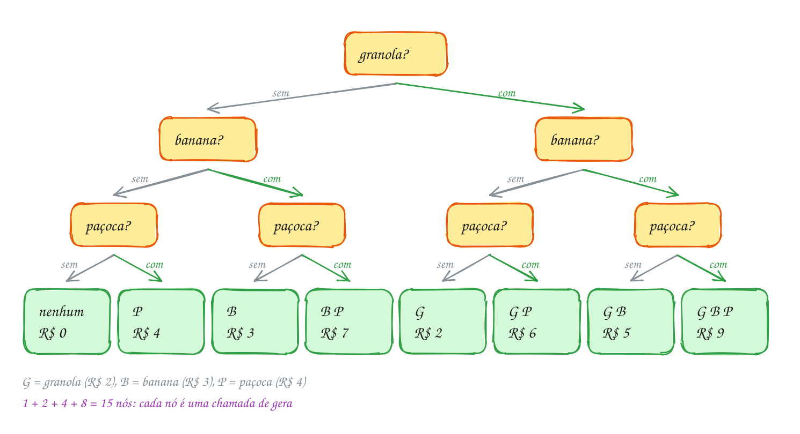
#include <stdio.h>
#define N 3
const char *nomes[N] = {"granola", "banana", "paçoca"};
const int precos[N] = {2, 3, 4}; // reais
int cesta[N]; // índices dos itens escolhidos até agora
int chamadas = 0;
// decide o item i; os k primeiros lugares da cesta já estão ocupados
void gera(int i, int k) {
chamadas++;
if (i == N) { // decidiu todos: mostra a cesta
int total = 0;
printf("{");
for (int j = 0; j < k; j++) {
printf(j == 0 ? "%s" : ", %s", nomes[cesta[j]]);
total += precos[cesta[j]];
}
printf("} R$ %d\n", total);
return;
}
gera(i + 1, k); // caminho 1: sem o item i
cesta[k] = i; // caminho 2: com o item i
gera(i + 1, k + 1);
}
int main(void) {
gera(0, 0);
printf("%d chamadas\n", chamadas);
return 0;
}
// Saída:
// {} R$ 0
// {paçoca} R$ 4
// {banana} R$ 3
// {banana, paçoca} R$ 7
// {granola} R$ 2
// {granola, paçoca} R$ 6
// {granola, banana} R$ 5
// {granola, banana, paçoca} R$ 9
// 15 chamadas
A árvore tem 1 + 2 + 4 + 8 = 15 nós, um por chamada, e a pilha nunca passa de 4 frames. O fluxograma não tem laço: quem repete é a recursão:
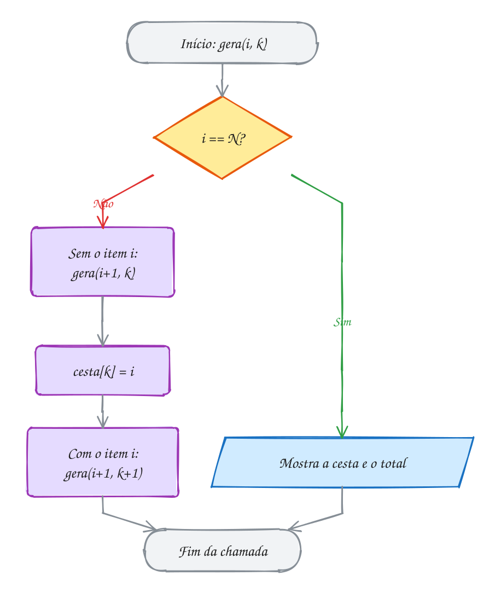
Exemplo A249 · Quem vai na carona: subconjuntos pelos bits
#include <stdio.h>
#define N 4
int main(void) {
const char *amigos[N] = {"Ana", "Beto", "Caio", "Duda"};
int cabem = 0; // grupos que cabem no carro (até 3 caronas)
// cada número de 0 a 15 é um grupo: o bit i ligado = o amigo i vai
// (o bit 0, da Ana, é o último dígito da direita)
for (int m = 0; m < (1 << N); m++) {
int pessoas = 0;
printf("%2d = ", m);
for (int b = N - 1; b >= 0; b--) {
printf("%d", (m >> b) & 1); // o número em binário, bit 3 primeiro
}
printf(":");
for (int i = 0; i < N; i++) {
if (m & (1 << i)) { // diferente de zero = bit ligado
printf(" %s", amigos[i]);
pessoas++;
}
}
if (pessoas == 0) {
printf(" ninguém");
}
if (pessoas <= 3) {
cabem++;
}
printf("\n");
}
printf("%d grupos possíveis, %d cabem no carro\n", 1 << N, cabem);
return 0;
}
// Saída:
// 0 = 0000: ninguém
// 1 = 0001: Ana
// 2 = 0010: Beto
// 3 = 0011: Ana Beto
// 4 = 0100: Caio
// 5 = 0101: Ana Caio
// 6 = 0110: Beto Caio
// 7 = 0111: Ana Beto Caio
// 8 = 1000: Duda
// 9 = 1001: Ana Duda
// 10 = 1010: Beto Duda
// 11 = 1011: Ana Beto Duda
// 12 = 1100: Caio Duda
// 13 = 1101: Ana Caio Duda
// 14 = 1110: Beto Caio Duda
// 15 = 1111: Ana Beto Caio Duda
// 16 grupos possíveis, 15 cabem no carro
gcc ~/LPEDC/material/A249.c -o ~/LPEDC/material/A249 && ~/LPEDC/material/A249
Exemplo A250 · Dois sabores na casquinha: só os subconjuntos de tamanho k
#include <stdio.h>
#define N 5
#define K 2
const char *sabores[N] = {"açaí", "coco", "limão", "manga", "uva"};
int escolha[K];
int total = 0;
// escolhe o sabor da posição pos da casquinha, a partir do sabor inicio
void combina(int pos, int inicio) {
if (pos == K) {
total++;
printf("%2d: %s + %s\n", total, sabores[escolha[0]], sabores[escolha[1]]);
return;
}
// só sabores depois do último escolhido: "coco + açaí" não aparece,
// porque é a mesma casquinha que "açaí + coco"
for (int s = inicio; s < N; s++) {
escolha[pos] = s;
combina(pos + 1, s + 1);
}
}
int main(void) {
combina(0, 0);
printf("C(%d, %d) = %d casquinhas\n", N, K, total);
return 0;
}
// Saída:
// 1: açaí + coco
// 2: açaí + limão
// 3: açaí + manga
// 4: açaí + uva
// 5: coco + limão
// 6: coco + manga
// 7: coco + uva
// 8: limão + manga
// 9: limão + uva
// 10: manga + uva
// C(5, 2) = 10 casquinhas
gcc ~/LPEDC/material/A250.c -o ~/LPEDC/material/A250 && ~/LPEDC/material/A250
Exercício E745 · ★☆☆
O restaurante por quilo do trabalho tem uma marmita fixa (a carne) e três acompanhamentos opcionais: arroz, feijão e salada. Escreva do zero um programa que mostre todas as marmitas possíveis contando m de 0 a 7 e lendo os bits de m (bit 0 = arroz, bit 1 = feijão, bit 2 = salada), sem recursão.
Saída esperada:
0: só a carne
1: arroz
2: feijão
3: arroz feijão
4: salada
5: arroz salada
6: feijão salada
7: arroz feijão salada
Exercício E747 · ★★☆
Você tem R$ 30 de crédito na barraca da feira e quer gastar o valor exato. Os produtos são:
queijo 12 café 7 carne 18 pão 5 frutas 9 frango 14
Escreva um programa que teste TODOS os 64 subconjuntos (pelos bits, com m de 0 a 63, bit 0 = queijo) e mostre os que somam exatamente 30, um por linha, e no fim quantos são.
Saída esperada:
queijo carne
café carne pão
café frutas frango
3 combinações de 64
Exercício E748 · ★★☆
Uma tia doou seis brinquedos para os sobrinhos Ana e Beto dividirem:
bicicleta R$ 500 patinete R$ 300 skate R$ 250
patins R$ 200 bola R$ 150 livro R$ 100
Escreva um programa que teste TODAS as 64 divisões: cada subconjunto vai para a Ana e o resto (o complemento) vai para o Beto. Mostre só as divisões JUSTAS (os dois recebem o mesmo valor) e, no fim, quantas são. Para não mostrar a mesma divisão duas vezes (com os nomes trocados), mostre só as que dão a bicicleta para a Ana. Em cada linha, liste os brinquedos de cada um na ordem acima.
Saída esperada:
Ana: bicicleta skate | Beto: patinete patins bola livro
Ana: bicicleta bola livro | Beto: patinete skate patins
2 divisões justas
Exercício E750 · ★★★
O pisca-pisca da varanda tem 3 lâmpadas, cada uma com seu interruptor, e você quer testar as 8 combinações de lâmpadas acesas. Contar 000, 001, 010, 011... obriga a mexer em vários interruptores de uma vez (de 011 para 100 são três). Escreva do zero um programa que percorra as 8 combinações mexendo em UM interruptor por vez (o código de Gray), mostre o estado (lâmpada 2 à esquerda, lâmpada 0 à direita) e diga qual lâmpada mudou.
Saída esperada:
000 começo, tudo apagado
001 liga a lâmpada 0
011 liga a lâmpada 1
010 desliga a lâmpada 0
110 liga a lâmpada 2
111 liga a lâmpada 0
101 desliga a lâmpada 1
100 desliga a lâmpada 0
No assunto 0125, a pergunta era quais itens entram. Agora todos entram, e a pergunta é em que ordem. A organização de um sarau com três grupos, rap, samba e forró, quer conhecer todas as ordens possíveis de apresentação para escolher a melhor. Qualquer um dos 3 pode abrir a noite; para o segundo lugar sobram 2; para o último, 1. São 3 × 2 × 1 = 6 ordens.
Cada ordem é uma permutação: um arranjo dos n elementos em sequência,
usando cada um exatamente uma vez. A conta do sarau vale em geral: há n
escolhas para a primeira posição, n - 1 para a segunda, e assim por diante
até 1, e o total é o fatorial, n! (FEOFILOFF, 2009).
A recursão gera as permutações decidindo uma posição por vez. A função
permuta(v, i) trabalha com uma promessa: as posições 0 até i - 1 do vetor
já estão decididas, e os candidatos à posição i são os elementos que sobraram,
guardados em v[i..n-1] (WIRTH, 1989). Quando i chega a n, não há mais
posição a decidir, e a ordem completa é mostrada.
Para cada candidato j, de i até n - 1, a função faz três movimentos.
Escolhe: troca v[i] com v[j], e o candidato vai para a posição i.
Desce: chama permuta(v, i + 1), que cuida das posições seguintes.
Desfaz: troca v[i] com v[j] de novo, e o vetor volta a ser o que era
antes da escolha (FEOFILOFF, 2009). Com o vetor {rap, samba, forró} e i = 0,
a primeira volta do laço troca o rap com ele mesmo e gera as ordens que abrem
com rap; a segunda troca rap com samba e gera as que abrem com samba; a
terceira, as que abrem com forró.
O terceiro movimento é o que separa este assunto do anterior. Nos subconjuntos, a escolha ficava num parâmetro e se desfazia sozinha na volta da chamada. Aqui a troca mexe no vetor, e o vetor é um só, compartilhado por todas as chamadas, porque o C passa vetor como endereço. Se você não destroca, a próxima volta do laço recebe o vetor bagunçado pela chamada anterior, e os candidatos deixam de ser os que deveriam (TENENBAUM; LANGSAM; AUGENSTEIN, 1995, cap. 3).
Um efeito colateral das trocas: as ordens não saem em ordem de dicionário.
Para três elementos a diferença aparece só no fim, mas cresce com n. Quem
precisa da ordem lexicográfica usa outro método de geração (KNUTH, 2011).
O custo cresce mais rápido que o dos subconjuntos. São n! folhas, e cada uma
gasta n passos para mostrar a ordem, então o total é O(n · n!), pior que
O(n · 2ⁿ). Para ter ideia, 13! vale 6.227.020.800 e já não cabe num int de
32 bits; 20!, cerca de 2,4 · 10¹⁸, fica perto do limite de um long long
(FEOFILOFF, 2009). Se os elementos são textos, troque os ponteiros e não os
textos: trocar dois char * custa 8 bytes por elemento, qualquer que seja o
tamanho do nome.
[!WARNING] Sem o desfaz, o programa ainda mostra n! linhas, mas com ordens repetidas e outras faltando. Toda alteração feita antes da chamada recursiva é desfeita depois dela, na ordem inversa.
Num sarau, três grupos (rap, samba e forró) se apresentam em todas as ordens possíveis. As 6 folhas da árvore são as 6 ordens, na sequência da saída:
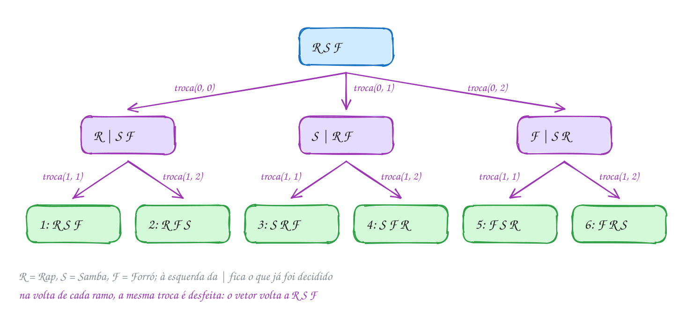
O vetor guarda ponteiros para os nomes (assunto 0048): trocar dois elementos é trocar dois ponteiros, e os textos não saem do lugar.
#include <stdio.h>
#define N 3
int ordens = 0;
void troca(const char **a, const char **b) {
const char *t = *a; // troca só os ponteiros, não as letras
*a = *b;
*b = t;
}
// as posições 0..i-1 já estão decididas; decide a posição i
void permuta(const char *v[], int i) {
if (i == N) {
ordens++;
printf("%d: %s, %s, %s\n", ordens, v[0], v[1], v[2]);
return;
}
for (int j = i; j < N; j++) {
troca(&v[i], &v[j]); // escolhe: v[j] vai para a posição i
permuta(v, i + 1); // decide o resto
troca(&v[i], &v[j]); // desfaz: devolve o vetor como estava
}
}
int main(void) {
const char *shows[N] = {"Rap", "Samba", "Forró"};
permuta(shows, 0);
printf("%d ordens; no fim: %s, %s, %s\n", ordens, shows[0], shows[1], shows[2]);
return 0;
}
// Saída:
// 1: Rap, Samba, Forró
// 2: Rap, Forró, Samba
// 3: Samba, Rap, Forró
// 4: Samba, Forró, Rap
// 5: Forró, Samba, Rap
// 6: Forró, Rap, Samba
// 6 ordens; no fim: Rap, Samba, Forró
Na última linha, o vetor voltou a ser Rap, Samba, Forró: cada chamada
desfez o que fez. O laço do j abre os ramos, com troca e destroca em volta da
chamada recursiva:
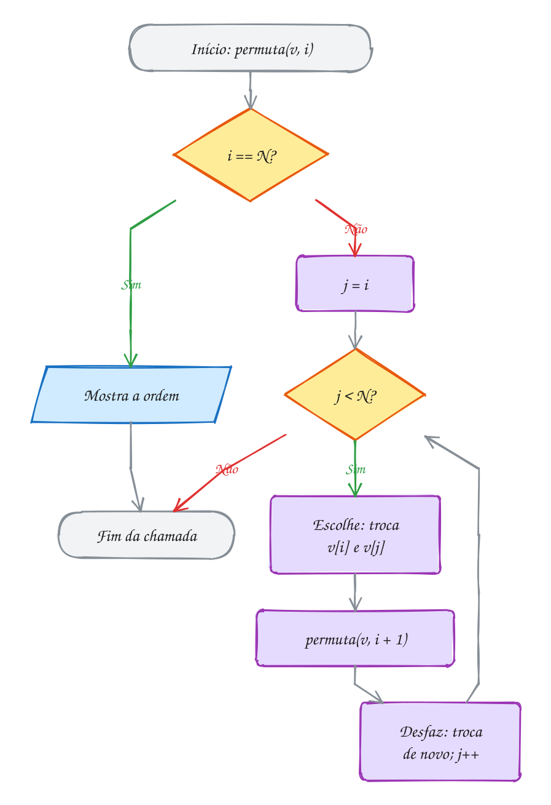
Exemplo A251 · Os anagramas de AMOR em ordem de dicionário
#include <stdbool.h>
#include <stdio.h>
#define N 4
const char letras[N + 1] = "AMOR"; // já em ordem alfabética
char palavra[N + 1]; // a permutação sendo montada
bool usada[N]; // usada[k]: a letra k já está na palavra?
int total = 0;
// em vez de trocar, escolhe para a posição pos a primeira letra livre,
// sempre da esquerda para a direita: a saída sai em ordem de dicionário
void anagramas(int pos) {
if (pos == N) {
palavra[N] = '\0';
total++;
printf("%s%s", palavra, total % 6 == 0 ? "\n" : " ");
return;
}
for (int k = 0; k < N; k++) {
if (usada[k]) {
continue; // essa letra já foi usada antes
}
usada[k] = true; // escolhe
palavra[pos] = letras[k];
anagramas(pos + 1); // desce
usada[k] = false; // desfaz (palavra[pos] é sobrescrita depois)
}
}
int main(void) {
anagramas(0);
printf("%d anagramas\n", total);
return 0;
}
// Saída:
// AMOR AMRO AOMR AORM ARMO AROM
// MAOR MARO MOAR MORA MRAO MROA
// OAMR OARM OMAR OMRA ORAM ORMA
// RAMO RAOM RMAO RMOA ROAM ROMA
// 24 anagramas
gcc ~/LPEDC/material/A251.c -o ~/LPEDC/material/A251 && ~/LPEDC/material/A251
Exemplo A252 · ARARA: anagramas sem repetir quando há letras iguais
#include <stdio.h>
#include <string.h>
#define MAX 16
int conta[26]; // quantas de cada letra ainda estão disponíveis
char palavra[MAX];
int n, total = 0;
// em cada posição, tenta cada LETRA diferente uma vez só (e não cada
// cópia dela): assim os dois R de ARARA nunca geram anagramas repetidos
void gera(int pos) {
if (pos == n) {
palavra[n] = '\0';
total++;
printf("%2d: %s\n", total, palavra);
return;
}
for (int c = 0; c < 26; c++) {
if (conta[c] == 0) {
continue;
}
conta[c]--; // escolhe uma letra c
palavra[pos] = (char)('A' + c);
gera(pos + 1);
conta[c]++; // desfaz: devolve a letra
}
}
int main(void) {
const char *origem = "ARARA";
n = (int)strlen(origem);
for (int i = 0; i < n; i++) {
conta[origem[i] - 'A']++; // A: 3, R: 2
}
gera(0);
// 5! / (3! · 2!) = 120 / 12 = 10: trocar os A entre si ou os R entre si
// não muda a palavra
printf("5! = 120 ordens das letras, mas só %d anagramas diferentes\n", total);
return 0;
}
// Saída:
// 1: AAARR
// 2: AARAR
// 3: AARRA
// 4: ARAAR
// 5: ARARA
// 6: ARRAA
// 7: RAAAR
// 8: RAARA
// 9: RARAA
// 10: RRAAA
// 5! = 120 ordens das letras, mas só 10 anagramas diferentes
gcc ~/LPEDC/material/A252.c -o ~/LPEDC/material/A252 && ~/LPEDC/material/A252
Exercício E751 · ★☆☆
Você esqueceu a senha de 3 dígitos do cadeado da mochila. Lembra só que ela usa os dígitos 4, 7 e 9, cada um uma vez. Escreva do zero um programa que gere todas as senhas possíveis com a recursão por trocas do texto (troca, desce, desfaz), mostre cada uma como um número inteiro e, no fim, a soma de todas (para conferir que nenhuma faltou nem repetiu).
Saída esperada:
479
497
749
794
974
947
soma: 4440
Exercício E753 · ★★☆
O motoboy sai da pizzaria (local 0), entrega em quatro bairros (1 a 4) e volta para a pizzaria. A matriz dist (em km, já no programa) diz a distância entre cada par de locais. Gere todas as 4! = 24 ordens de entrega, calcule o percurso de cada uma (ida, entregas e volta) e mostre a menor distância e a PRIMEIRA ordem, na ordem em que a sua recursão gera, que a atinge.
Saída esperada:
24 rotas testadas
menor: 16 km
rota: Pizzaria -> Lagoa -> Centro -> Jardim -> Vila -> Pizzaria
Exercício E754 · ★★☆
Cinco atletas correm a final: Ana, Bia, Cris, Dani e Edu. Escreva um programa que conte todas as ordens de chegada (5! = 120) com a recursão por trocas do texto. Mas a premiação só liga para o PÓDIO: ouro, prata e bronze, nessa ordem. Conte também os pódios possíveis e quantos deles têm a Bia (em qualquer dos três lugares). Não gere as 120 ordens e depois filtre: pare a recursão quando as 3 primeiras posições estiverem decididas.
Saída esperada:
120 ordens de chegada
60 pódios possíveis
Bia aparece em 36
Exercício E756 · ★★★
Às vezes você não quer TODAS as permutações de uma vez, só a próxima depois de uma dada, em ordem de dicionário. Escreva do zero a função
bool proxima(int v[], int n)
que transforma v na permutação seguinte e devolve true, ou devolve false se v já é a última (em ordem decrescente). Sem recursão. Depois use-a para listar as permutações de {1, 2, 3} e teste os dois casos abaixo.
Saída esperada:
1 2 3
1 3 2
2 1 3
2 3 1
3 1 2
3 2 1
depois de 1 3 5 4 2 vem 1 4 2 3 5
5 4 3 2 1 é a última
A enumeração dos assuntos 0125 e 0126 visita tudo, inclusive o que já nasceu perdido. Imagine um cartão-presente de R$ 35 que não dá troco: ou você gasta o valor exato, ou o resto se perde. Na vitrine há um atlas de R$ 30, um mangá de R$ 20, um livro de poesia de R$ 15 e um marcador de R$ 5. Você quer as combinações que fecham R$ 35. Bastaria testar os 2⁴ = 16 subconjuntos, só que atlas e mangá juntos já somam R$ 50, e a enumeração cega continua testando todo subconjunto que começa assim, como se ainda houvesse chance.
O backtracking, que também se chama retrocesso ou tentativa e erro, é a enumeração que desiste cedo. A cada escolha, ele pergunta se o começo montado até ali ainda pode virar uma solução. Se não pode, volta um passo e tenta outra coisa, sem completar o que já está condenado (ZIVIANI, 2010, cap. 2).
Na árvore de decisões, desistir cedo tem um efeito grande. Cada nó tem abaixo dele uma subárvore inteira de possibilidades, e voltar daquele nó descarta todas de uma vez. Cortar um galho inteiro sem visitá-lo se chama poda (WIRTH, 1989). Quanto mais perto da raiz a poda acontece, mais folhas ela elimina.
Todo backtracking segue o mesmo esqueleto, com três partes, nesta ordem (FEOFILOFF, 2009). Primeiro, o caso de parada: a solução está completa? Se está, mostre ou conte e volte. Segundo, a poda: o começo já é inviável? Se é, volte sem descer. Terceiro, a escolha: para cada opção disponível, escolha, desça com uma chamada recursiva e, na volta, desfaça a escolha, como nas permutações.
O problema do cartão é um caso clássico, a soma de subconjuntos: achar quais itens de uma lista somam exatamente um valor-alvo (FEOFILOFF, 2009). A poda vem de uma propriedade dos dados. Os preços são positivos, então acrescentar um item só aumenta a soma. Se a soma passou de 35, nenhum item a mais conserta, e o galho pode ser cortado. E se a soma bateu exatamente 35, a solução está pronta, e também não há por que descer. Com atlas e mangá na cesta, a soma de 50 corta de uma vez os quatro subconjuntos que começam com os dois.
Assim como nos subconjuntos, a volta precisa deixar o estado como estava. O
que é parâmetro, como a soma acumulada, se desfaz sozinho: cada chamada tem
a sua cópia, e voltar devolve o valor anterior. O que é global, como o vetor
leva[] que marca os itens escolhidos, é um só para todas as chamadas e
precisa ser desfeito à mão: leva[i] = false antes de tentar o caminho sem o
item (KERNIGHAN; RITCHIE, 1989).
A poda não muda a garantia de pior caso. Se os dados forem desfavoráveis, ela quase não corta nada, e o backtracking continua O(2ⁿ). O que muda é quanto da árvore você visita na prática, e em muitos problemas a diferença é enorme (ROVAI, 2018).
[!WARNING] A poda só corta o que com certeza não leva a solução. Poda com
>=no lugar de>descarta as somas que batem o alvo, e a saída fica vazia. A ordem dos testes também importa: teste "fechou" antes de "acabaram os itens".
Um cartão-presente de R$ 35 não dá troco. Na vitrine: atlas (R$ 30), mangá (R$ 20), poesia (R$ 15) e marcador (R$ 5). Na árvore, a esquerda leva o item; caixas vermelhas são podas, verdes são soluções e cinzas, becos sem saída:
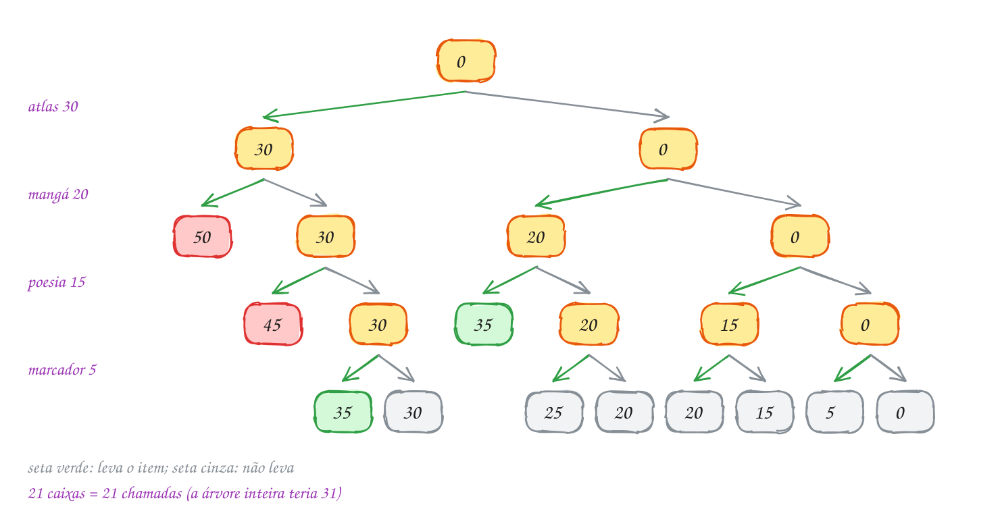
#include <stdbool.h>
#include <stdio.h>
#define N 4
#define ALVO 35
const char *itens[N] = {"atlas", "mangá", "poesia", "marcador"};
const int precos[N] = {30, 20, 15, 5}; // reais
bool leva[N];
int chamadas = 0;
// já decidiu os itens 0..i-1, que somam soma reais
void tenta(int i, int soma) {
chamadas++;
if (soma > ALVO) {
return; // poda: passou, nada abaixo serve
}
if (soma == ALVO) { // fechou: mostra e não desce mais
printf("R$ %d:", soma);
for (int j = 0; j < i; j++) {
if (leva[j]) {
printf(" %s", itens[j]);
}
}
printf("\n");
return;
}
if (i == N) {
return; // acabaram os itens sem fechar
}
leva[i] = true; // tenta com o item i
tenta(i + 1, soma + precos[i]);
leva[i] = false; // volta e tenta sem ele
tenta(i + 1, soma);
}
int main(void) {
tenta(0, 0);
printf("%d chamadas (sem poda seriam 31)\n", chamadas);
return 0;
}
// Saída:
// R$ 35: atlas marcador
// R$ 35: mangá poesia
// 21 chamadas (sem poda seriam 31)
A árvore completa de 4 itens tem 31 nós, e a poda deixou 21. Com 30 itens e um alvo pequeno, são alguns milhares de chamadas em vez de um bilhão:
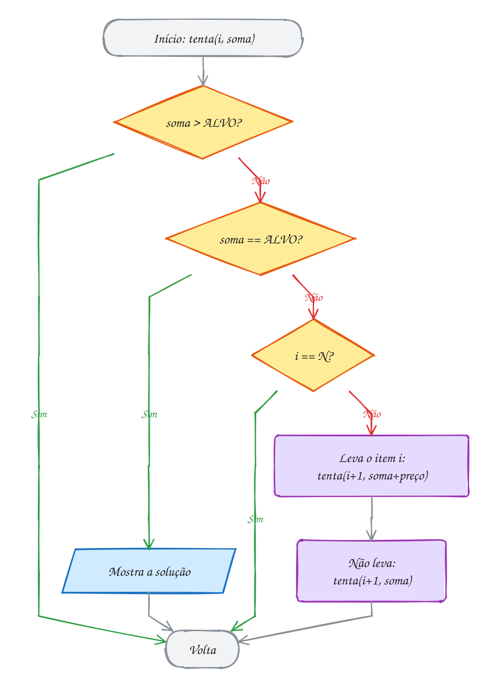
Exemplo A253 · Lote de 40 kg: a segunda poda, "o que falta não alcança"
#include <stdbool.h>
#include <stdio.h>
#define N 7
#define ALVO 40
const int pesos[N] = {18, 15, 12, 9, 7, 4, 2}; // caixas de doação, em kg
int resto[N + 1]; // resto[i] = soma dos pesos de i até o fim
bool leva[N];
int chamadas;
// modo 0: sem poda; 1: só "passou do alvo"; 2: as duas podas
void tenta(int i, int soma, int modo, bool mostrar) {
chamadas++;
if (modo >= 1 && soma > ALVO) {
return; // poda 1: passou
}
if (modo >= 2 && soma + resto[i] < ALVO) {
return; // poda 2: nem levando tudo chega
}
if (i == N) {
if (soma == ALVO && mostrar) {
printf(" 40 kg:");
for (int j = 0; j < N; j++) {
if (leva[j]) {
printf(" %d", pesos[j]);
}
}
printf("\n");
}
return;
}
leva[i] = true;
tenta(i + 1, soma + pesos[i], modo, mostrar);
leva[i] = false;
tenta(i + 1, soma, modo, mostrar);
}
int main(void) {
resto[N] = 0;
for (int i = N - 1; i >= 0; i--) {
resto[i] = resto[i + 1] + pesos[i]; // somas do fim para o começo
}
printf("Lotes possíveis:\n");
tenta(0, 0, 2, true);
const char *nomes[3] = {"sem poda", "poda 1", "podas 1 e 2"};
for (int modo = 0; modo <= 2; modo++) {
chamadas = 0;
tenta(0, 0, modo, false);
printf("%-12s %3d chamadas\n", nomes[modo], chamadas);
}
return 0;
}
// Saída:
// Lotes possíveis:
// 40 kg: 18 15 7
// 40 kg: 18 9 7 4 2
// 40 kg: 15 12 9 4
// 40 kg: 15 12 7 4 2
// sem poda 255 chamadas
// poda 1 193 chamadas
// podas 1 e 2 55 chamadas
gcc ~/LPEDC/material/A253.c -o ~/LPEDC/material/A253 && ~/LPEDC/material/A253
Exemplo A254 · Playlist de 30 minutos: parar na primeira solução
#include <stdbool.h>
#include <stdio.h>
#define N 7
#define ALVO 30
const char *musicas[N] = {"Aquarela", "Bossa", "Ciranda", "Dengo", "Estrada", "Frevo", "Garoa"};
const int minutos[N] = {7, 4, 9, 5, 6, 3, 8};
bool toca[N];
int chamadas = 0;
// devolve true assim que acha uma playlist; o true sobe pela pilha de
// chamadas e cada nível volta na hora, sem tentar mais nada
bool procura(int i, int soma) {
chamadas++;
if (soma > ALVO) {
return false;
}
if (soma == ALVO) {
return true; // achou: toca[0..i-1] é a resposta
}
if (i == N) {
return false;
}
toca[i] = true;
if (procura(i + 1, soma + minutos[i])) {
return true; // não desfaz: a resposta fica em toca[]
}
toca[i] = false;
return procura(i + 1, soma);
}
// a mesma busca, mas conta todas as soluções em vez de parar
int conta_todas(int i, int soma) {
chamadas++;
if (soma > ALVO) {
return 0;
}
if (soma == ALVO) {
return 1;
}
if (i == N) {
return 0;
}
return conta_todas(i + 1, soma + minutos[i]) + conta_todas(i + 1, soma);
}
int main(void) {
if (procura(0, 0)) {
printf("Primeira playlist:");
for (int j = 0; j < N; j++) {
if (toca[j]) {
printf(" %s (%d)", musicas[j], minutos[j]);
}
}
printf("\nachada em %d chamadas\n", chamadas);
}
chamadas = 0;
int total = conta_todas(0, 0);
printf("todas: %d playlists, %d chamadas\n", total, chamadas);
return 0;
}
// Saída:
// Primeira playlist: Aquarela (7) Bossa (4) Dengo (5) Estrada (6) Garoa (8)
// achada em 36 chamadas
// todas: 4 playlists, 247 chamadas
gcc ~/LPEDC/material/A254.c -o ~/LPEDC/material/A254 && ~/LPEDC/material/A254
Exercício E757 · ★☆☆
Para a trilha do fim de semana, a mochila tem que pesar exatamente 12 kg (nem mais, para não cansar, nem menos, para não faltar nada). Os itens pesam: barraca 7, comida 5, água 4, saco 3 e fogareiro 2. Escreva o backtracking tenta(i, soma), que decide o item i (leva ou não leva) e conta as chamadas no começo da função. Volte quando a soma passar de 12 (poda). Quando a soma for 12, mostre os itens levados e volte, sem decidir os itens que sobram.
Saída esperada:
barraca comida
barraca saco fogareiro
comida água saco
45 chamadas
Exercício E759 · ★★☆
A caminhonete do frete aguenta 100 kg e há cinco caixas para levar, com 47, 39, 28, 23 e 16 kg. Não dá para levar todas. Que caixas levar para aproveitar ao máximo a carga, sem passar de 100 kg? Agora não existe um alvo exato: o backtracking precisa guardar a MELHOR solução vista até o momento. Escreva o programa do zero.
Saída esperada:
melhor carga: 98 kg
caixas: 47 28 23
Exercício E760 · ★★☆
Na banca, os pacotes de figurinhas vêm com quantidades diferentes: 25, 20, 15, 12, 10, 8 e 5 figurinhas (um pacote de cada). Você precisa de exatamente 60 figurinhas para completar o álbum. Escreva um backtracking que mostre todas as combinações (tentando levar o pacote antes de não levar) e, no fim, a combinação com MENOS pacotes (se houver empate, fique com a primeira encontrada).
Saída esperada:
25 20 15
25 20 10 5
25 15 12 8
25 12 10 8 5
20 15 12 8 5
menos pacotes: 25 20 15 (3 pacotes)
Exercício E762 · ★★★
Desafio da revista de passatempos: coloque um sinal + ou - antes de cada número de 2 a 7, na sequência 1 _ 2 _ 3 _ 4 _ 5 _ 6 _ 7, para que a conta dê 10 (o 1 é sempre positivo). Escreva do zero um backtracking que mostre todas as soluções, tentando sempre + antes de -, e conte as chamadas da função recursiva. Use esta poda, no começo de cada chamada: se nem somando nem subtraindo todos os números que faltam dá para chegar a 10, volte.
Saída esperada:
1+2+3-4-5+6+7 = 10
1+2-3+4+5-6+7 = 10
1-2+3+4+5+6-7 = 10
1-2-3-4+5+6+7 = 10
4 expressões, 83 chamadas
O backtracking do assunto 0127 mostra a força real num quebra-cabeça antigo.
No xadrez, a rainha ataca qualquer peça na mesma linha, na mesma coluna ou na
mesma diagonal, a qualquer distância. O desafio é pôr N rainhas num
tabuleiro N × N sem que nenhuma ataque outra. Esse é o problema das
N-rainhas, o exemplo clássico de tentativa e erro (WIRTH, 1989).
Comece pelo tamanho do problema. Num tabuleiro 4 × 4, a força bruta escolheria
4 das 16 casas, sem olhar mais nada: são 1820 jeitos. A primeira observação
corta isso. Duas rainhas na mesma linha se atacam, e há N rainhas para N
linhas, então cada linha tem exatamente uma rainha. A solução deixa de ser
"quais casas" e vira "em que coluna fica a rainha de cada linha", um vetor
pos em que pos[l] é a coluna da rainha da linha l (TENENBAUM; LANGSAM;
AUGENSTEIN, 1995, cap. 3).
A busca segue o esqueleto do assunto 0127, uma linha por chamada. A função
rainha(l) tenta cada coluna c da linha l. Se a casa (l, c) é atacada
por alguma rainha já posta nas linhas de cima, a busca poda e passa para a
próxima coluna. Se a casa está livre, ela marca a rainha ali, desce para
rainha(l + 1) e, na volta, desmarca, para a casa estar limpa quando a
próxima coluna for tentada (FEOFILOFF, 2009). Quando l chega a N, todas as
linhas têm rainha, e a solução é mostrada.
Falta testar o ataque. O jeito óbvio é um laço pelas rainhas anteriores,
conferindo coluna e diagonais de cada uma. Há um jeito melhor, que depende de
uma propriedade das diagonais. Na diagonal que sobe para a direita, ↗, a
soma l + c é a mesma em todas as casas: andar uma casa na diagonal diminui a
linha em 1 e aumenta a coluna em 1. Essa soma vai de 0 a 2N - 2, e serve
direto de índice. Na diagonal que desce para a direita, ↘, o que se mantém é a
diferença l - c, que vai de -(N - 1) a N - 1. Como índice de vetor não
pode ser negativo, some N - 1, e a faixa vira 0 a 2N - 2 (WIRTH, 1989).
Num 4 × 4, a casa da linha 1, coluna 3, está na ↗ de número 4 e na ↘ de número
1 - 3 + 3 = 1.
Com esses números, três vetores de bool guardam o que está ocupado:
coluna[N], diag1[2N - 1] para as ↗ e diag2[2N - 1] para as ↘. A casa
(l, c) está livre se coluna[c], diag1[l + c] e diag2[l - c + N - 1]
estão todos falsos. O laço pelas rainhas anteriores vira três leituras, em
O(1) (WIRTH, 1989). Com isso, o 8-rainhas acha as 92 soluções com 2057
chamadas.
Para marcar a rainha, o código usa uma atribuição em cadeia:
coluna[c] = diag1[l + c] = diag2[l - c + N - 1] = true. Ela funciona porque,
em C, a atribuição é uma expressão que devolve o valor atribuído, e o
operador agrupa da direita para a esquerda: a atribuição mais à direita
acontece primeiro, e o valor dela alimenta a seguinte (KERNIGHAN; RITCHIE,
1989). Na volta, a mesma linha com false desmarca as três.
[!WARNING] O índice da ↘ é
l - c + N - 1, nãol - c: para (0, 3),diag2[-3]escreve fora do vetor. Desmarcar só a coluna e esquecer as diagonais faz o programa achar menos soluções.
Quatro rainhas num tabuleiro 4 × 4. À esquerda do desenho, a primeira solução;
no meio, l + c de cada casa; à direita, l - c + 3. A rainha da linha 1,
coluna 3, ocupa a ↗ 4 e a ↘ 1:
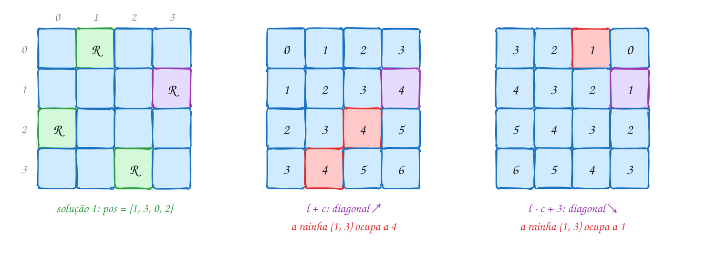
#include <stdbool.h>
#include <stdio.h>
#define N 4
int pos[N]; // pos[l] = coluna da rainha da linha l
bool coluna[N]; // coluna[c]: já tem rainha na coluna c?
bool diag1[2 * N - 1]; // diagonal ↗, índice l + c
bool diag2[2 * N - 1]; // diagonal ↘, índice l - c + N - 1
int solucoes = 0, chamadas = 0;
void mostra(void) {
printf("Solução %d:\n", solucoes);
for (int l = 0; l < N; l++) {
for (int c = 0; c < N; c++) {
printf(c == 0 ? "%c" : " %c", pos[l] == c ? 'R' : '.');
}
printf("\n");
}
}
// as linhas 0..l-1 já têm rainha; põe a da linha l
void rainha(int l) {
chamadas++;
if (l == N) {
solucoes++;
mostra();
return;
}
for (int c = 0; c < N; c++) {
if (coluna[c] || diag1[l + c] || diag2[l - c + N - 1]) {
continue; // poda: a casa (l, c) está atacada
}
pos[l] = c; // escolhe
coluna[c] = diag1[l + c] = diag2[l - c + N - 1] = true;
rainha(l + 1); // desce
coluna[c] = diag1[l + c] = diag2[l - c + N - 1] = false; // desfaz
}
}
int main(void) {
rainha(0);
printf("%d soluções, %d chamadas\n", solucoes, chamadas);
return 0;
}
// Saída:
// Solução 1:
// . R . .
// . . . R
// R . . .
// . . R .
// Solução 2:
// . . R .
// R . . .
// . . . R
// . R . .
// 2 soluções, 17 chamadas
A rainha em (0, 0) nunca dá certo: a busca gasta 4 chamadas para descobrir e esquece o galho. O fluxograma é o do assunto anterior, com um laço pelas colunas:
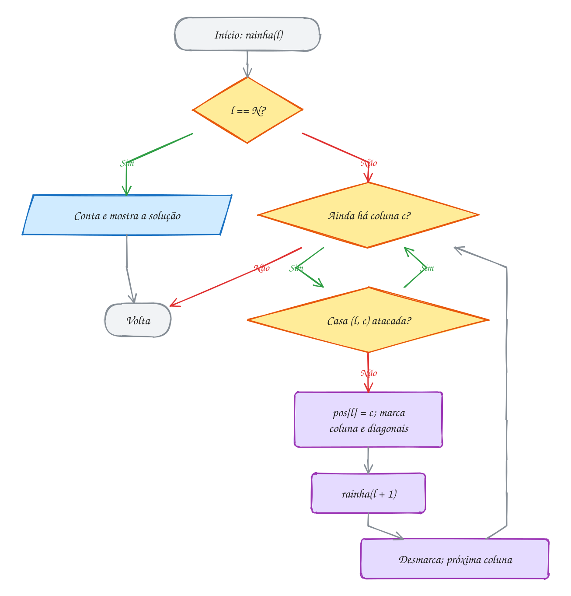
O começo da busca, até a primeira solução. "Atacada" quer dizer que a poda cortou a casa antes de qualquer chamada:
| linha | tenta | o que acontece |
|---|---|---|
| 0 | coluna 0 | livre: marca e desce |
| 1 | colunas 0 e 1 | atacadas (coluna 0; diagonal ↘ da rainha (0, 0)) |
| 1 | coluna 2 | livre: marca e desce |
| 2 | colunas 0 a 3 | todas atacadas: volta, desmarca (1, 2) |
| 1 | coluna 3 | livre: marca e desce |
| 2 | coluna 1 | livre: marca e desce |
| 3 | colunas 0 a 3 | todas atacadas: volta; na linha 2, as colunas 2 e 3 também estão atacadas, e a linha 1 já tentou tudo: volta à linha 0 |
| 0 | coluna 1 | livre: desce, e o caminho 3, 0, 2 fecha a solução 1 |
Exemplo A255 · Quantas soluções de 1 a 12 rainhas: o tabuleiro em bits
#include <stdio.h>
long long chamadas;
// cada bit de um unsigned é uma coluna. cols: colunas ocupadas;
// d1 e d2: casas desta linha atacadas pelas diagonais das rainhas de cima
long long conta(int n, unsigned cols, unsigned d1, unsigned d2) {
chamadas++;
unsigned todas = (1u << n) - 1; // n bits ligados
if (cols == todas) {
return 1; // uma rainha em cada coluna: solução
}
long long total = 0;
unsigned livres = todas & ~(cols | d1 | d2);
while (livres != 0) {
unsigned bit = livres & (~livres + 1); // o bit ligado mais baixo
livres -= bit;
// na linha de baixo, a diagonal ↘ ataca uma coluna à frente (<< 1)
// e a ↙ uma coluna atrás (>> 1): basta deslocar os bits
total += conta(n, cols | bit, ((d1 | bit) << 1) & todas, (d2 | bit) >> 1);
}
return total;
}
int main(void) {
// as chamadas batem com as do texto (17 para n = 4): mesma árvore,
// só que o teste de ataque virou uma conta de bits
printf(" n soluções chamadas\n");
for (int n = 1; n <= 12; n++) {
chamadas = 0;
long long s = conta(n, 0, 0, 0);
printf("%2d %8lld %9lld\n", n, s, chamadas);
}
return 0;
}
// Saída:
// n soluções chamadas
// 1 1 2
// 2 0 3
// 3 0 6
// 4 2 17
// 5 10 54
// 6 4 153
// 7 40 552
// 8 92 2057
// 9 352 8394
// 10 724 35539
// 11 2680 166926
// 12 14200 856189
gcc ~/LPEDC/material/A255.c -o ~/LPEDC/material/A255 && ~/LPEDC/material/A255
Exemplo A256 · A primeira solução do 8-rainhas, sem vetores auxiliares
#include <stdbool.h>
#include <stdio.h>
#include <stdlib.h>
#define N 8
int pos[N];
int chamadas = 0;
// a casa (l, c) é atacada por alguma rainha das linhas 0..l-1?
// custa O(l) em vez de O(1), mas não precisa de vetor nenhum além de pos
bool pode(int l, int c) {
for (int k = 0; k < l; k++) {
if (pos[k] == c || abs(pos[k] - c) == l - k) {
return false; // mesma coluna, ou mesma distância nas duas direções
}
}
return true;
}
// devolve true na primeira solução: o true sobe e ninguém tenta mais nada
bool rainha(int l) {
chamadas++;
if (l == N) {
return true;
}
for (int c = 0; c < N; c++) {
if (pode(l, c)) {
pos[l] = c; // não precisa desfazer: pos[l] é sobrescrito
if (rainha(l + 1)) {
return true;
}
}
}
return false;
}
int main(void) {
if (rainha(0)) {
for (int l = 0; l < N; l++) {
for (int c = 0; c < N; c++) {
printf(c == 0 ? "%c" : " %c", pos[l] == c ? 'R' : '.');
}
printf("\n");
}
printf("pos = {");
for (int l = 0; l < N; l++) {
printf(l == 0 ? "%d" : ", %d", pos[l]);
}
printf("}, achada em %d chamadas\n", chamadas);
}
return 0;
}
// Saída:
// R . . . . . . .
// . . . . R . . .
// . . . . . . . R
// . . . . . R . .
// . . R . . . . .
// . . . . . . R .
// . R . . . . . .
// . . . R . . . .
// pos = {0, 4, 7, 5, 2, 6, 1, 3}, achada em 114 chamadas
gcc ~/LPEDC/material/A256.c -o ~/LPEDC/material/A256 && ~/LPEDC/material/A256
Exercício E763 · ★☆☆
Antes de resolver o tabuleiro inteiro, o clube quer um juiz: uma função
bool ataca(int l1, int c1, int l2, int c2)
que diz se duas rainhas, nas casas (l1, c1) e (l2, c2) de um tabuleiro 8 × 8, se atacam (mesma linha, mesma coluna ou mesma diagonal). Escreva a função do zero e teste com os pares (l1, c1, l2, c2) abaixo:
0 0 3 3 1 2 3 1 2 5 2 0 4 1 1 4 0 3 5 3 6 2 3 0
Saída esperada:
(0, 0) e (3, 3): ataca
(1, 2) e (3, 1): não ataca
(2, 5) e (2, 0): ataca
(4, 1) e (1, 4): ataca
(0, 3) e (5, 3): ataca
(6, 2) e (3, 0): não ataca
Exercício E765 · ★★☆
No tabuleiro 8 × 8 do clube, alguém colou a rainha da linha 0 na coluna 3, e ela não sai mais. Quantas das 92 soluções do 8-rainhas ainda são possíveis? Escreva o programa (pode partir do código do texto) e mostre a primeira solução encontrada e o total.
Saída esperada:
primeira: 3 0 4 7 1 6 2 5
18 soluções com a rainha em (0, 3)
Exercício E766 · ★★☆
Na sala de prova, as carteiras formam uma grade n × n e o fiscal senta n alunos: um em cada fileira e um em cada coluna. Alunos de fileiras VIZINHAS não podem estar em colunas vizinhas (um enxergaria a prova do outro na diagonal); em fileiras mais distantes, a diagonal é livre.
Escreva um backtracking, fileira por fileira, que conte as arrumações da sala de prova para n = 4, 5 e 6 e mostre a primeira de cada n (a coluna de cada fileira, de cima para baixo).
Saída esperada:
n = 4: 2 arrumações, primeira: 1 3 0 2
n = 5: 14 arrumações, primeira: 0 2 4 1 3
n = 6: 90 arrumações, primeira: 0 2 4 1 3 5
Exercício E767 · ★★★
Escreva o 8-rainhas com três vetores de marcas: colunas, diagonais ↗ e diagonais ↘ (cada casa tem a sua marca em cada um, e a recursão desfaz com o MESMO índice com que marcou). Conte as soluções e, no fim, confira que os três vetores voltaram a ficar limpos (todos false): se algum desfazer errar o índice, sobra marca e a contagem sai errada.
Saída esperada:
92 soluções
vetores limpos no fim: sim
Num labirinto de milho, quem sai sem mapa usa uma estratégia que todo mundo conhece. Segue por um corredor; num beco, volta até a última bifurcação e tenta outro corredor; e deixa pedrinhas pelo caminho para não andar em círculos. Isso é backtracking, e o labirinto é o lugar mais concreto para vê-lo funcionar.
No C, o labirinto vira uma matriz de caracteres, char lab[L][C + 1], em
que cada linha é uma string (daí o + 1, para o '\0'). O caractere '#' é
parede, '.' é corredor livre, 'S' é a entrada e 'F' é a saída
(TENENBAUM; LANGSAM; AUGENSTEIN, 1995, cap. 3). Cada casa é um par
(l, c), e os vizinhos dela são as quatro casas à direita, abaixo, à
esquerda e acima.
A função recursiva anda(l, c) responde uma pergunta só: "dá para chegar à
saída a partir desta casa?". Ela recusa logo três casos: casa fora do mapa,
parede e casa que já está marcada. Se a casa é a saída, responde sim. Senão,
marca a casa com '*', como uma pedrinha, e tenta os quatro vizinhos. Se
algum responder sim, ela também responde sim, e as casas com '*' formam o
caminho. Se nenhum servir, ela desfaz a marca e responde não (DEITEL;
DEITEL, 2011).
O desfazer tem um detalhe. A casa não volta a ser '.': ela vira 'x', uma
marca de beco. Uma casa de onde não se chega à saída continua sem levar à
saída na próxima vez que a busca passar por ela, então não adianta entrar de
novo. Com essa marca, cada casa é visitada no máximo uma vez, e o custo fica
em O(L · C), proporcional ao tamanho do mapa (ROVAI, 2018).
Se você olhar com atenção, já viu esse algoritmo. É a busca em profundidade,
a DFS do assunto 0111: a matriz faz o papel do grafo, cada casa livre é um
vértice e os quatro vizinhos são as arestas. A marca '*' ou 'x' é o
visitado[] (CORMEN et al., 2024, cap. 20).
Os quatro vizinhos são tentados numa expressão só, ligados por ||. O
operador || do assunto 0013 tem curto-circuito: avalia da esquerda para
a direita e, assim que um termo dá verdadeiro, para, sem avaliar os seguintes.
Quando um vizinho devolve true, os outros nem são chamados (KERNIGHAN;
RITCHIE, 1989). Por isso a ordem das direções no código, direita, baixo,
esquerda, cima, decide qual caminho sai.
Como é uma DFS, o caminho achado é um caminho, não necessariamente o mais curto. Ele depende da ordem das direções e pode dar voltas enormes. Para o menor caminho, use a busca em largura, a BFS do assunto 0110, que explora a matriz em ondas (CORMEN et al., 2024, cap. 20).
A profundidade da recursão é o tamanho do caminho atual, que pode chegar a
L · C casas. Um mapa de 1000 × 1000 pede até um milhão de frames, mais que
os 8 MB de pilha que o Linux costuma dar. Para mapas grandes, troque a
recursão por uma pilha explícita de coordenadas, como no assunto 0082.
A mesma recursão tem outro uso famoso. Tire a saída e tire o desfazer: a função marca a casa e se espalha para os quatro vizinhos, até preencher toda a região conectada. Isso é o flood fill, ou preenchimento por inundação, a ferramenta do balde de tinta dos editores de imagem (CASTILHO; SILVA; WEINGAERTNER, 2020).
[!WARNING] Sem a marca de visitada, a busca anda em círculos: (0, 0) chama (0, 1), que volta para (0, 0), até a pilha estourar (stack overflow). Marque a casa antes de chamar os vizinhos.
Num labirinto de milho 6 × 7, os números do desenho mostram a ordem dos passos: a busca tentou o bolsão da direita, achou só becos (vermelho), voltou e desceu pela coluna 1:
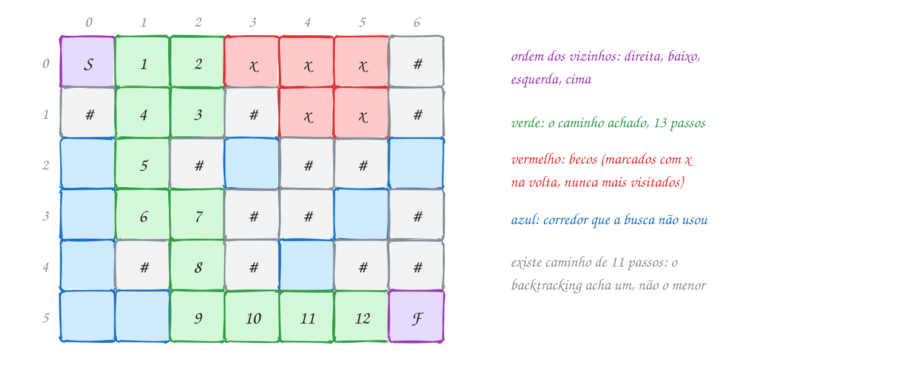
#include <stdbool.h>
#include <stdio.h>
#define L 6
#define C 7
char lab[L][C + 1] = { // + 1 para o '\0' de cada linha
"S.....#",
"#..#..#",
"..#.##.",
"...##.#",
".#.#.##",
"......F",
};
int chamadas = 0;
// tenta chegar à saída a partir da casa (l, c)
bool anda(int l, int c) {
chamadas++;
if (l < 0 || l >= L || c < 0 || c >= C) {
return false; // fora do mapa
}
if (lab[l][c] == 'F') {
return true; // achou a saída
}
if (lab[l][c] != '.' && lab[l][c] != 'S') {
return false; // parede, caminho atual ou beco
}
lab[l][c] = '*'; // escolhe: estou passando por aqui
if (anda(l, c + 1) || anda(l + 1, c) || anda(l, c - 1) || anda(l - 1, c)) {
return true; // direita, baixo, esquerda, cima
}
lab[l][c] = 'x'; // desfaz: beco sem saída
return false;
}
int main(void) {
if (anda(0, 0)) {
int passos = 0;
for (int l = 0; l < L; l++) {
for (int c = 0; c < C; c++) {
printf(c == 0 ? "%c" : " %c", lab[l][c]);
passos += lab[l][c] == '*';
}
printf("\n");
}
printf("%d passos até a saída, %d chamadas\n", passos, chamadas);
} else {
printf("sem saída\n");
}
return 0;
}
// Saída:
// * * * x x x #
// # * * # x x #
// . * # . # # .
// . * * # # . #
// . # * # . # #
// . . * * * * F
// 13 passos até a saída, 41 chamadas
O caminho tem 13 passos, mas existe um de 11 (descer direto pela coluna 1).
Três perguntas descartam as casas impossíveis, e só uma casa nova chega ao
'*':
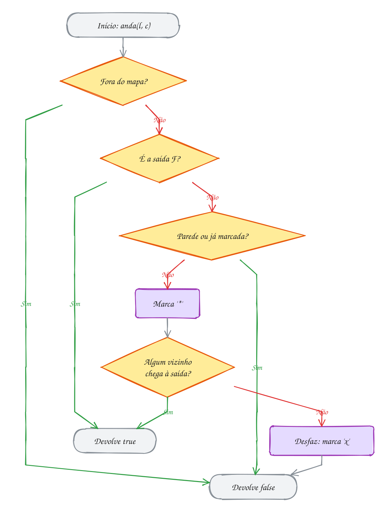
Exemplo A257 · Balde de tinta: o flood fill pinta a sala inteira
#include <stdio.h>
#define L 7
#define C 12
// a planta do apartamento: # é parede, . é piso
char planta[L][C + 1] = {
"############",
"#....#.....#",
"#....#.....#",
"#..###.#####",
"#......#...#",
"#####..#...#",
"############",
};
// pinta com cor a região de piso que contém (l, c); devolve quantas casas
// pintou. Não tem saída para procurar nem nada para desfazer: a tinta fica
int pinta(int l, int c, char cor) {
if (l < 0 || l >= L || c < 0 || c >= C || planta[l][c] != '.') {
return 0; // fora, parede ou já pintada
}
planta[l][c] = cor; // pintar É marcar como visitada
return 1 + pinta(l, c + 1, cor) + pinta(l + 1, c, cor)
+ pinta(l, c - 1, cor) + pinta(l - 1, c, cor);
}
void mostra(void) {
for (int l = 0; l < L; l++) {
printf("%s\n", planta[l]);
}
}
int main(void) {
int sala = pinta(2, 2, 'o'); // um clique na sala (a cozinha, à direita,
// vem junto: o corredor liga as duas)
int quarto = pinta(4, 9, '+'); // outro clique no quarto
mostra();
printf("sala e cozinha: %d casas; quarto: %d casas\n", sala, quarto);
printf("clicar de novo na sala pinta %d casas\n", pinta(2, 2, 'o'));
return 0;
}
// Saída:
// ############
// #oooo#ooooo#
// #oooo#ooooo#
// #oo###o#####
// #oooooo#+++#
// #####oo#+++#
// ############
// sala e cozinha: 29 casas; quarto: 6 casas
// clicar de novo na sala pinta 0 casas
gcc ~/LPEDC/material/A257.c -o ~/LPEDC/material/A257 && ~/LPEDC/material/A257
Exemplo A258 · Todos os caminhos da praça: desfazer de verdade para achar o menor
#include <stdio.h>
#define L 4
#define C 5
char mapa[L][C + 1] = {
"S...#",
".#...",
"...#.",
"#...F",
};
char melhor[L][C + 1]; // cópia do mapa com o menor caminho desenhado
int caminhos = 0, menor = -1, maior = -1;
// conta TODOS os caminhos simples (sem repetir casa) até F. Na volta, a casa
// volta a ser '.': outro caminho pode passar por ela. Sem o 'x' do texto, a
// busca deixa de ser O(L · C) e vira exponencial
void anda(int l, int c, int passos) {
if (l < 0 || l >= L || c < 0 || c >= C) {
return;
}
if (mapa[l][c] == 'F') {
caminhos++;
if (maior < 0 || passos > maior) {
maior = passos;
}
if (menor < 0 || passos < menor) {
menor = passos;
for (int i = 0; i < L; i++) {
for (int j = 0; j <= C; j++) {
melhor[i][j] = mapa[i][j]; // guarda o desenho
}
}
}
return;
}
if (mapa[l][c] != '.' && mapa[l][c] != 'S') {
return;
}
char antes = mapa[l][c];
mapa[l][c] = '*';
anda(l, c + 1, passos + 1);
anda(l + 1, c, passos + 1);
anda(l, c - 1, passos + 1);
anda(l - 1, c, passos + 1);
mapa[l][c] = antes; // desfaz: libera a casa
}
int main(void) {
anda(0, 0, 0);
printf("%d caminhos diferentes, de %d a %d passos\n", caminhos, menor, maior);
printf("um dos menores:\n");
for (int l = 0; l < L; l++) {
printf("%s\n", melhor[l]);
}
return 0;
}
// Saída:
// 12 caminhos diferentes, de 7 a 13 passos
// um dos menores:
// ****#
// .#.**
// ...#*
// #...F
gcc ~/LPEDC/material/A258.c -o ~/LPEDC/material/A258 && ~/LPEDC/material/A258
Exercício E769 · ★☆☆
No mapa do sítio, # é cerca e . é grama. A vaca está na casa (2, 3) e anda livre pela grama, mas não pula cerca. O sitiante quer saber quantas casas de grama ela alcança (a área do pasto dela). Escreva int pasto(int l, int c), um flood fill recursivo nas quatro direções (direita, baixo, esquerda, cima) que marca com 'v' cada casa alcançada e devolve quantas são. Mostre o mapa e a área.
Saída esperada:
##########
#vvvv#...#
#vvvv#...#
#vv###...#
#vv#.....#
##########
a vaca alcança 12 casas
Exercício E771 · ★★☆
Na foto de satélite da fazenda, ~ é água e . é terra. Duas casas de água são do mesmo lago quando são vizinhas na horizontal ou na vertical (diagonal não conta). Escreva um programa que conte os lagos e mostre, para cada um, a primeira casa encontrada (varrendo linha por linha, da esquerda para a direita) e o tamanho.
Saída esperada:
lago 1: começa em (0, 0), tamanho 5
lago 2: começa em (1, 6), tamanho 4
lago 3: começa em (2, 10), tamanho 5
lago 4: começa em (3, 1), tamanho 4
lago 5: começa em (5, 6), tamanho 1
5 lagos
Exercício E772 · ★★☆
O robô aspirador precisa ir da base (S) até a tomada (F) na planta abaixo. Escreva um backtracking que ande pelas casas '.', tentando os vizinhos na ordem direita, baixo, esquerda, cima. Marque o caminho com '*' (e as casas sem saída com 'x') e guarde as coordenadas enquanto anda. Mostre a planta com o caminho, com um espaço entre as casas, depois a lista de casas, da base até a tomada, e o número de passos.
Saída esperada:
* * # . . .
. * # . # .
. * * * # .
# # # * * *
. . . . # F
caminho: (0,0) (0,1) (1,1) (2,1) (2,2) (2,3) (3,3) (3,4) (3,5) (4,5)
9 passos
Exercício E774 · ★★★
O entregador quer o MENOR caminho da loja (S) até o cliente (F) no mapa do condomínio. O backtracking do texto acha um caminho qualquer; aqui você vai testar todos, com o "desfazer" do exemplo A258 (a casa volta a '.' na volta), e podar com o melhor resultado conhecido: se o caminho atual já tem tantos passos quanto o menor achado até agora, volte. Escreva do zero, tentando os vizinhos na ordem direita, baixo, esquerda, cima, e conte as chamadas da função recursiva.
Saída esperada:
menor caminho: 9 passos
******
.##.#*
.....*
.#.##*
...#.F
177 chamadas
O sudoku junta tudo o que o módulo mostrou num problema que muita gente resolve no papel. A grade tem 9 × 9 casas, algumas já preenchidas. O objetivo é completar as vazias com dígitos de 1 a 9 sem repetir nenhum dígito numa linha, numa coluna ou numa das nove caixas 3 × 3 em que a grade se divide. Problemas assim, em que se procura uma atribuição de valores que respeite um conjunto de regras, se chamam problemas de satisfação de restrições, e o backtracking é a forma natural de atacá-los (DEITEL; DEITEL, 2011).
A grade vira uma matriz int g[9][9], com 0 marcando a casa vazia. Do ponto
de vista do backtracking, cada casa vazia é uma decisão com 9 opções, e a
árvore de decisões tem um nível por casa vazia (DEITEL; DEITEL, 2011). Com 51
casas vazias, a força bruta pura teria 9⁵¹ folhas, um número impossível de
percorrer. A poda é o que torna o problema viável.
A poda é a própria regra do jogo: um dígito que já aparece na linha, na
coluna ou na caixa da casa não pode entrar. Para testar isso sem varrer a
grade, o programa usa vetores de marcação, como os das N-rainhas no
assunto 0128. na_linha[l][d] diz se o dígito d já está na linha l;
na_coluna[c][d] faz o mesmo para a coluna c; e na_caixa[b][d], para a
caixa b. O teste vira três leituras, em O(1) (WIRTH, 1989). Os vetores têm 10
posições por linha, e o índice 0 fica sem uso, para que o próprio dígito sirva
de índice.
Falta numerar as caixas. As linhas 0 a 2 formam a primeira faixa de caixas, as
linhas 3 a 5 a segunda e as 6 a 8 a terceira; o mesmo vale para as colunas. A
divisão inteira l / 3 dá a faixa da linha e c / 3 dá a faixa da coluna, e a
casa (l, c) fica na caixa b = (l / 3) * 3 + c / 3, um número de 0 a 8. A
casa (4, 7), por exemplo, está na caixa 1 * 3 + 2 = 5.
A função resolve(k) percorre as casas em ordem de leitura, da esquerda para
a direita e de cima para baixo. A casa número k, de 0 a 80, fica na linha
k / 9 e na coluna k % 9. A função pula as casas já preenchidas e, na
primeira vazia, tenta cada dígito que passa pela poda: escreve e marca,
desce para resolve(k + 1) e, se não deu certo, apaga e desmarca
(FEOFILOFF, 2009). Quando não sobra casa vazia, a grade está completa, e o
true sobe pelas chamadas até o main.
A ordem em que as casas são decididas pesa muito. Ir em ordem de leitura é simples, mas escolher primeiro a casa com menos candidatos poda muito mais cedo: uma casa com uma opção só não gera ramo nenhum, e uma escolha errada é descoberta antes de a árvore crescer (ZIVIANI, 2010, cap. 2).
A grade do exemplo chega como texto, uma string por linha, com . para casa
vazia. Para transformar o caractere '7' no número 7, o código faz
jogo[l][c] - '0'. A conta funciona porque os caracteres de '0' a '9' são
consecutivos na tabela de caracteres (assunto 0040): a distância entre '7' e
'0' é exatamente 7 (KERNIGHAN; RITCHIE, 1989).
[!WARNING] No desfazer, as duas coisas voltam:
g[l][c] = 0emarca(..., false). Sem og[l][c] = 0, a casa fica com o último dígito tentado e owhilepassa a tratá-la como dada: a grade sai errada.
Um jogo com 51 casas vazias, escrito como texto (. é casa vazia). Na casa
(0, 1), a poda deixa só o 5 e o 7. O programa tenta o 5 e, só depois de muitos
retrocessos, descobre que é o 7:
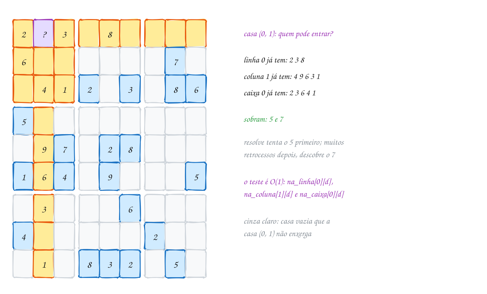
#include <stdbool.h>
#include <stdio.h>
int g[9][9];
bool na_linha[9][10]; // na_linha[l][d]: o dígito d já está na linha l?
bool na_coluna[9][10];
bool na_caixa[9][10]; // caixas 3 × 3 numeradas de 0 a 8
long chamadas = 0;
int caixa(int l, int c) {
return (l / 3) * 3 + c / 3;
}
void marca(int l, int c, int d, bool valor) {
na_linha[l][d] = na_coluna[c][d] = na_caixa[caixa(l, c)][d] = valor;
}
// resolve a partir da casa número k (0 a 80, lendo linha por linha)
bool resolve(int k) {
chamadas++;
while (k < 81 && g[k / 9][k % 9] != 0) {
k++; // pula as casas já preenchidas
}
if (k == 81) {
return true; // nenhuma casa vazia: resolvido
}
int l = k / 9, c = k % 9;
for (int d = 1; d <= 9; d++) {
if (na_linha[l][d] || na_coluna[c][d] || na_caixa[caixa(l, c)][d]) {
continue; // poda: d já aparece
}
g[l][c] = d; // escolhe
marca(l, c, d, true);
if (resolve(k + 1)) {
return true;
}
marca(l, c, d, false); // desfaz
g[l][c] = 0;
}
return false; // nenhum dígito serve: volta
}
int main(void) {
const char *jogo[9] = {
"2.3.8....", "6......7.", ".412.3.86",
"5........", ".97.28...", "164.9...5",
".3...6...", "4.....2..", ".1.832.5.",
};
for (int l = 0; l < 9; l++) {
for (int c = 0; c < 9; c++) {
if (jogo[l][c] != '.') {
g[l][c] = jogo[l][c] - '0';
marca(l, c, g[l][c], true);
}
}
}
if (resolve(0)) {
for (int l = 0; l < 9; l++) {
for (int c = 0; c < 9; c++) {
printf("%d%s", g[l][c], c == 8 ? "\n" : (c % 3 == 2 ? " | " : " "));
}
if (l % 3 == 2 && l < 8) {
printf("------+-------+------\n");
}
}
}
printf("%ld chamadas\n", chamadas);
return 0;
}
// Saída:
// 2 7 3 | 6 8 5 | 1 4 9
// 6 8 5 | 9 4 1 | 3 7 2
// 9 4 1 | 2 7 3 | 5 8 6
// ------+-------+------
// 5 2 8 | 1 6 4 | 7 9 3
// 3 9 7 | 5 2 8 | 4 6 1
// 1 6 4 | 3 9 7 | 8 2 5
// ------+-------+------
// 8 3 2 | 4 5 6 | 9 1 7
// 4 5 6 | 7 1 9 | 2 3 8
// 7 1 9 | 8 3 2 | 6 5 4
// 2999 chamadas
São 2999 chamadas; a força bruta testaria até 9⁵¹ preenchimentos. Escolher a casa com menos candidatos derruba este jogo para 64 chamadas (exemplo A260). O fluxograma é o esqueleto do módulo, com a regra do jogo no lugar da poda:
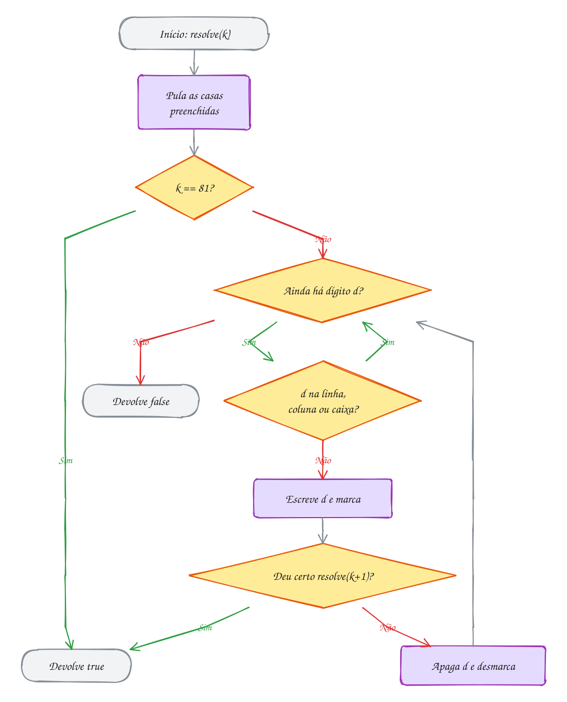
Exemplo A259 · Quantas grades de sudoku 4 × 4 existem?
#include <stdbool.h>
#include <stdio.h>
#define N 4
int g[N][N];
int grades = 0;
long chamadas = 0;
// confere direto na grade, sem vetores de marcação: com N = 4, varrer a
// linha, a coluna e o bloco 2 × 2 custa só alguns passos
bool cabe(int l, int c, int d) {
int bl = l / 2 * 2, bc = c / 2 * 2;
for (int i = 0; i < N; i++) {
if (g[l][i] == d || g[i][c] == d || g[bl + i / 2][bc + i % 2] == d) {
return false;
}
}
return true;
}
// preenche a casa k e CONTA as soluções: não para na primeira
void preenche(int k) {
chamadas++;
if (k == N * N) {
grades++;
if (grades == 1) {
printf("a primeira:\n");
for (int l = 0; l < N; l++) {
printf("%d %d | %d %d\n", g[l][0], g[l][1], g[l][2], g[l][3]);
}
}
return;
}
int l = k / N, c = k % N;
for (int d = 1; d <= N; d++) {
if (cabe(l, c, d)) {
g[l][c] = d;
preenche(k + 1);
g[l][c] = 0; // desfaz: senão cabe() enxerga um d que não existe
}
}
}
int main(void) {
preenche(0);
printf("%d grades 4 × 4 válidas, %ld chamadas\n", grades, chamadas);
printf("com a 1ª linha fixa em 1 2 3 4: %d\n", grades / 24); // 4! trocas de dígitos
return 0;
}
// Saída:
// a primeira:
// 1 2 | 3 4
// 3 4 | 1 2
// 2 1 | 4 3
// 4 3 | 2 1
// 288 grades 4 × 4 válidas, 2753 chamadas
// com a 1ª linha fixa em 1 2 3 4: 12
gcc ~/LPEDC/material/A259.c -o ~/LPEDC/material/A259 && ~/LPEDC/material/A259
Exemplo A260 · Sudoku com heurística: começar pela casa mais apertada
#include <stdbool.h>
#include <stdio.h>
int g[9][9];
long chamadas;
// quantos dígitos cabem em (l, c); os que cabem ficam marcados em pode[]
int candidatos(int l, int c, bool pode[10]) {
for (int d = 1; d <= 9; d++) {
pode[d] = true;
}
int bl = l / 3 * 3, bc = c / 3 * 3;
for (int i = 0; i < 9; i++) {
pode[g[l][i]] = false; // linha (casa vazia
// apaga pode[0]: tanto faz)
pode[g[i][c]] = false; // coluna
pode[g[bl + i / 3][bc + i % 3]] = false; // caixa (i de 0 a 8)
}
int n = 0;
for (int d = 1; d <= 9; d++) {
n += pode[d];
}
return n;
}
// em vez da próxima casa vazia na leitura, escolhe a vazia com MENOS
// candidatos: se ela tem 1, não há escolha; se tem 0, o ramo morre já
bool resolve(void) {
chamadas++;
int ml = -1, mc = -1, menor = 10;
bool pode[10], melhor[10];
for (int l = 0; l < 9; l++) {
for (int c = 0; c < 9; c++) {
if (g[l][c] == 0) {
int n = candidatos(l, c, pode);
if (n < menor) {
menor = n;
ml = l;
mc = c;
for (int d = 1; d <= 9; d++) {
melhor[d] = pode[d];
}
}
}
}
}
if (ml < 0) {
return true; // nenhuma casa vazia
}
for (int d = 1; d <= 9; d++) { // se menor for 0, o laço nem entra
if (melhor[d]) {
g[ml][mc] = d;
if (resolve()) {
return true;
}
g[ml][mc] = 0;
}
}
return false;
}
int main(void) {
const char *jogo[9] = { // o mesmo jogo do texto (lá: 2999 chamadas)
"2.3.8....", "6......7.", ".412.3.86",
"5........", ".97.28...", "164.9...5",
".3...6...", "4.....2..", ".1.832.5.",
};
for (int l = 0; l < 9; l++) {
for (int c = 0; c < 9; c++) {
g[l][c] = jogo[l][c] == '.' ? 0 : jogo[l][c] - '0';
}
}
chamadas = 0;
if (resolve()) {
printf("linha do meio: ");
for (int c = 0; c < 9; c++) {
printf("%d", g[4][c]);
}
printf("\n%ld chamadas com a casa mais apertada primeiro\n", chamadas);
}
return 0;
}
// Saída:
// linha do meio: 397528461
// 64 chamadas com a casa mais apertada primeiro
gcc ~/LPEDC/material/A260.c -o ~/LPEDC/material/A260 && ~/LPEDC/material/A260
Exercício E776 · ★☆☆
Um aplicativo de sudoku mostra, em letra miúda, os candidatos de cada casa vazia: os dígitos que ainda podem entrar ali. Escreva void candidatos(int l, int c), que mostra os dígitos de 1 a 9 que não aparecem na linha l, na coluna c nem na caixa 3 × 3 da casa (l, c). Use o jogo abaixo (um ponto é casa vazia) e mostre os candidatos das casas (0, 1), (3, 1), (4, 0), (6, 0), (8, 8) e (3, 8).
2.3.8....
6......7.
.412.3.86
5........
.97.28...
164.9...5
.3...6...
4.....2..
.1.832.5.
Saída esperada:
(0, 1): 5 7
(3, 1): 2 8
(4, 0): 3
(6, 0): 7 8 9
(8, 8): 4 7 9
(3, 8): 1 2 3 4 7 8 9
Exercício E777 · ★★☆
O caderno infantil de passatempos traz o sudoku 6 × 6: dígitos de 1 a 6, sem repetir na linha, na coluna e em cada bloco de 2 linhas por 3 colunas. Escreva um resolvedor para ele (pode adaptar o do texto) e resolva o jogo abaixo, contando as chamadas da função recursiva.
..2..3
1..2..
.1....
6..3..
24.6..
.6.5..
Saída esperada:
4 5 2 | 1 6 3
1 3 6 | 2 5 4
------+------
5 1 3 | 4 2 6
6 2 4 | 3 1 5
------+------
2 4 5 | 6 3 1
3 6 1 | 5 4 2
73 chamadas
Exercício E778 · ★★☆
Um sudoku bem feito tem UMA solução só. A editora da revista quer conferir os jogos antes de imprimir. Escreva um resolvedor de sudoku (pode adaptar o do texto) com a função
int conta(int k, int limite)
que conta as soluções a partir da casa k, mas para assim que a contagem chegar a limite. Com limite 2, ela responde o que a editora quer saber: 1 é solução única, 2 é "mais de uma". Confira dois jogos: o jogo 1 abaixo e o jogo 2, que é o jogo 1 sem o 5 do fim da linha 5 (contando de 0).
Jogo 1:
2.3.8....
6......7.
.412.3.86
5........
.97.28...
164.9...5
.3...6...
4.....2..
.1.832.5.
Saída esperada:
jogo 1: solução única
jogo 2: mais de uma solução
Exercício E780 · ★★★
O sudoku X tem uma regra a mais: as duas diagonais grandes da grade (a principal, de (0, 0) a (8, 8), e a secundária, de (0, 8) a (8, 0)) também precisam ter os dígitos de 1 a 9 sem repetir. É a mistura do sudoku com as diagonais das N-rainhas. Escreva um resolvedor de sudoku X (pode partir do texto) e resolva o jogo abaixo, contando as chamadas da função recursiva.
24.3..7.5
....7..2.
...54..3.
....8.49.
....9.2.3
8........
...6...5.
675.3.1..
.......68
Saída esperada:
249368715
356971824
781542639
512783496
467195283
893426571
928614357
675839142
134257968
diagonais: 251796348 e 526394871
4171 chamadas
30 exercícios que misturam os assuntos do módulo, no ritmo da prova. Arquivos P1901.c a P1930.c, em material/; resoluções em _respostas/19-backtracking/lista/.
Exercício P1901 · ★☆☆ · Três sabores no pote
A sorveteria da praça tem 5 sabores: açaí, cupuaçu, tapioca, graviola e buriti. O pote médio leva 3 sabores diferentes, e a ordem não importa (açaí + cupuaçu + tapioca é o mesmo pote que tapioca + açaí + cupuaçu). Escreva do zero a função recursiva combina(ini, k), que escolhe os sabores em ordem crescente de índice: cada chamada só olha sabores a partir de ini. Mostre todos os potes, numerados, e o total.
Saída esperada:
1: açaí cupuaçu tapioca
2: açaí cupuaçu graviola
3: açaí cupuaçu buriti
4: açaí tapioca graviola
5: açaí tapioca buriti
6: açaí graviola buriti
7: cupuaçu tapioca graviola
8: cupuaçu tapioca buriti
9: cupuaçu graviola buriti
10: tapioca graviola buriti
Total: 10 potes
Resposta esperada: 10 potes, que é C(5, 3) = 5! / (3! 2!).
Exercício P1902 · ★☆☆ · Cara ou coroa quatro vezes
Na pelada de domingo, o juiz tira cara (C) ou coroa (K) quatro vezes para decidir quem escolhe o lado em cada tempo da prorrogação. Quais são as sequências possíveis? Aqui pode repetir símbolo: é permutação COM repetição, 2 opções em cada uma das 4 posições. O programa abaixo já mostra cada sequência e conta; complete o corpo de sorteia(pos), que preenche a posição pos com cada símbolo e chama a próxima.
Saída esperada:
CCCC
CCCK
CCKC
CCKK
CKCC
CKCK
CKKC
CKKK
KCCC
KCCK
KCKC
KCKK
KKCC
KKCK
KKKC
KKKK
16 sequências, 6 com duas caras
Resposta esperada: 16 sequências (2^4), de CCCC até KKKK; 6 delas têm duas caras e duas coroas.
Exercício P1903 · ★☆☆ · Luzes que não ficam lado a lado
Na fachada da loja há 5 lâmpadas em fila. Para economizar energia e não esquentar o letreiro, a regra é: nunca duas lâmpadas vizinhas acesas ao mesmo tempo. Escreva do zero um backtracking que monta a fila da esquerda para a direita, com 0 (apagada) ou 1 (acesa), e CORTA o ramo na hora em que ia acender uma lâmpada ao lado de outra acesa. Mostre as configurações válidas e o total.
Saída esperada:
00000
00001
00010
00100
00101
01000
01001
01010
10000
10001
10010
10100
10101
Total: 13 configurações
Resposta esperada: 13 configurações. Com n lâmpadas, o total segue Fibonacci: 2, 3, 5, 8, 13...
Exercício P1904 · ★☆☆ · Quantas vezes a função foi chamada
O programa abaixo gera os subconjuntos dos 4 ingredientes da tapioca (queijo, coco, banana, tucumã) com a recursão "leva ou não leva". Ele já funciona. Instrumente: conte quantas vezes gera() é chamada (contando a primeira) e quantas chamadas chegam ao fim (as folhas), e mostre os dois números no fim, sem mudar o resto da saída.
Saída esperada:
{ queijo coco banana tucumã }
{ queijo coco banana }
{ queijo coco tucumã }
{ queijo coco }
{ queijo banana tucumã }
{ queijo banana }
{ queijo tucumã }
{ queijo }
{ coco banana tucumã }
{ coco banana }
{ coco tucumã }
{ coco }
{ banana tucumã }
{ banana }
{ tucumã }
{ }
Chamadas: 31, folhas: 16
Resposta esperada: 31 chamadas e 16 folhas (2^(n+1) - 1 e 2^n).
Exercício P1905 · ★☆☆ · Os sócios que sumiram da mesa
Este programa tem um erro de propósito. Ana, Bia e Caio vão sentar lado a lado na mesa do bar, e o programa devia mostrar as 3! = 6 ordens, gerando as permutações por trocas. Ele compila sem aviso e roda limpo, mas não mostra ordem nenhuma: "0 ordens". Conserte a linha errada.
Saída esperada:
Ana Bia Caio
Ana Caio Bia
Bia Ana Caio
Bia Caio Ana
Caio Bia Ana
Caio Ana Bia
6 ordens
Resposta esperada: for (int i = k; i < N; i++). As 6 ordens saem na ordem de cima.
Exercício P1906 · ★☆☆ · Presidente e vice do grêmio
Quatro alunos se candidataram ao grêmio: Davi, Eva, Fábio e Gil. Um vai ser presidente e outro vice (a ordem importa: Davi presidente com Eva vice é diferente de Eva presidente com Davi vice). Escreva do zero um backtracking com vetor usado[] que escolhe 2 dos 4, em ordem, e mostra cada chapa no formato "presidente / vice", e o total.
Saída esperada:
Davi / Eva
Davi / Fábio
Davi / Gil
Eva / Davi
Eva / Fábio
Eva / Gil
Fábio / Davi
Fábio / Eva
Fábio / Gil
Gil / Davi
Gil / Eva
Gil / Fábio
Total: 12 chapas
Resposta esperada: 12 chapas, o arranjo A(4, 2) = 4 · 3.
Exercício P1907 · ★☆☆ · A playlist de 30 minutos
O motorista do ônibus de turismo quer uma playlist que dure exatamente 30 minutos até a próxima parada. As músicas duram 7, 12, 5, 9, 11 e 4 minutos. Escreva a função acha(i, soma), que devolve 1 assim que achar UM subconjunto que soma 30 (e 0 se não houver), marcando em leva[] as músicas escolhidas. Corte o ramo quando a soma passar de 30. O main já mostra o resultado.
Saída esperada:
Playlist: 7 12 11 = 30 minutos
Resposta esperada: 7 + 12 + 11 = 30. É a primeira que a ordem "leva antes de não levar" encontra.
Exercício P1908 · ★☆☆ · O fogo que pula na diagonal
No mapa de uma área de reserva, # é aceiro (faixa sem mato, o fogo não passa) e . é mato. O fogo começa na casa (0, 0) e, com o vento, pula também na DIAGONAL: são 8 vizinhos, não 4. Escreva do zero o flood fill recursivo queima(l, c), que troca por * cada casa de mato alcançada. Mostre o mapa depois do fogo e quantas casas queimaram.
Saída esperada:
**#****
**#*#**
##*##**
###**#*
..#*#**
Queimadas: 20 casas
Resposta esperada: 20 casas queimadas. Com só 4 vizinhos, o fogo pararia nas 4 do canto. As 2 casas de mato do canto de baixo à esquerda escapam mesmo com o vento.
Exercício P1909 · ★☆☆ · Rainhas de 1 a 9
O clube de xadrez vai pendurar um cartaz com o número de soluções das N-rainhas para cada tamanho de tabuleiro, de 1 a 9. O programa abaixo já tem os vetores de coluna e das duas diagonais e o laço do main. Falta o corpo de coloca(lin, n): para cada coluna livre, marque, desça para a próxima linha e desmarque. Monte a tabela.
Saída esperada:
N soluções
1 1
2 0
3 0
4 2
5 10
6 4
7 40
8 92
9 352
Resposta esperada: 1, 0, 0, 2, 10, 4, 40, 92, 352. O 6 tem menos soluções que o 5.
Exercício P1910 · ★☆☆ · Três dígitos que somam 15
No kakuro da revista de passatempos, uma faixa de 3 casas precisa somar 15 com dígitos de 1 a 9, todos diferentes. Que trincas servem? Escreva do zero um backtracking que escolhe os dígitos em ordem crescente (cada um maior que o anterior, assim a mesma trinca não aparece duas vezes) e corta o ramo quando a soma passa de 15. Mostre as trincas e o total.
Saída esperada:
1 5 9
1 6 8
2 4 9
2 5 8
2 6 7
3 4 8
3 5 7
4 5 6
Total: 8 trincas
Resposta esperada: 8 trincas, de 1 5 9 até 4 5 6.
Exercício P1911 · ★★☆ · Pintando o mapa do Norte
O professor de geografia quer pintar os 7 estados da região Norte com só 3 cores (verde, amarelo e azul) de modo que estados com fronteira nunca tenham a mesma cor. As fronteiras estão na matriz viz do programa (sem contar o Mato Grosso e os outros vizinhos de fora da região). Este é o problema da COLORAÇÃO DE GRAFO. Escreva pinta(e): tente cada cor no estado e, pule a cor se um vizinho já pintado tem a mesma, desça para e + 1 e desfaça. Guarde a primeira coloração achada e conte todas.
Saída esperada:
Primeira coloração:
AC: verde
AM: amarelo
RR: verde
RO: azul
PA: azul
AP: verde
TO: verde
Colorações com 3 cores: 48
Resposta esperada: a primeira coloração é a de cima e há 48 jeitos de pintar. O 48 é múltiplo de 3! = 6: trocar as cores entre si sempre dá outra coloração válida.
Exercício P1912 · ★★☆ · Quantos horários de prova?
A coordenação do curso vai marcar as provas finais de 6 disciplinas. Duas disciplinas com algum aluno em comum não podem ter prova no mesmo horário. Os conflitos são:
Cálculo - Física Cálculo - Álgebra Cálculo - Programação
Física - Química Física - Programação Álgebra - Programação
Química - Inglês Programação - Inglês
Qual é o MENOR número de horários que resolve? Escreva do zero: para k = 1, 2, 3..., tente colorir o grafo com k cores por backtracking (a cor é o horário) e pare no primeiro k que dá certo. Mostre cada tentativa e, no fim, a grade de horários achada.
Saída esperada:
1 horário(s): não dá
2 horário(s): não dá
3 horários: dá
Horário 1: Cálculo Química
Horário 2: Física Álgebra Inglês
Horário 3: Programação
Resposta esperada: 3 horários (o número cromático do grafo é 3).
Exercício P1913 · ★★☆ · ARARA em pedaços palíndromos
Um palíndromo se lê igual dos dois lados (ARA, ARARA, A). De quantos jeitos dá para cortar a palavra ARARA em pedaços que sejam todos palíndromos? Escreva do zero um backtracking: a partir da posição ini, tente cada pedaço s[ini..fim]; se ele for palíndromo, guarde e continue a partir de fim + 1. Mostre cada corte com os pedaços separados por | e o total.
Saída esperada:
A|R|A|R|A
A|R|ARA
A|RAR|A
ARA|R|A
ARARA
Total: 5 jeitos
Resposta esperada: 5 jeitos, do A|R|A|R|A até o ARARA inteiro.
Exercício P1914 · ★★☆ · Os anagramas de BOLO sem repetir
A permutação com usado[] gera 4! = 24 ordens para as letras de BOLO, mas como o O aparece duas vezes, cada anagrama sai repetido. Escreva do zero um gerador que conta quantas vezes cada letra sobra (B: 1, L: 1, O: 2) e, em cada posição, tenta cada letra DIFERENTE que ainda tem sobra. Assim cada anagrama sai uma vez só, em ordem alfabética.
Saída esperada:
BLOO
BOLO
BOOL
LBOO
LOBO
LOOB
OBLO
OBOL
OLBO
OLOB
OOBL
OOLB
Total: 12 anagramas
Resposta esperada: 12 anagramas, que é 4! / 2!.
Exercício P1915 · ★★☆ · Quanto a poda economiza
O caixa da cooperativa precisa achar quais boletos somam exatamente R$ 100 entre 12 boletos pendentes. O programa abaixo testa todos os 2^12 subconjuntos, sem poda, e conta as chamadas. Estenda-o: escreva com_poda(i, soma, resto), igual a sem_poda, mas que corta o ramo em dois casos: quando soma > ALVO (passou) e quando soma + resto < ALVO (nem levando tudo o que falta chega lá). resto é a soma dos boletos de i em diante. Mostre as soluções e as chamadas das duas versões.
Saída esperada:
Sem poda: 50 soluções, 8191 chamadas
Com poda: 50 soluções, 745 chamadas
Resposta esperada: as duas acham 50 soluções; sem poda são 8191 chamadas (2^13 - 1), com poda só 745.
Exercício P1916 · ★★☆ · Pacotes de pão de queijo
A padaria embala pão de queijo em pacotes de 3, 4 e 5 unidades, e pode usar quantos pacotes de cada tamanho quiser. Uma encomenda de 15 pães pode sair como 5 + 5 + 5, como 3 + 3 + 4 + 5 e de outros jeitos. Escreva do zero um backtracking que lista todos os jeitos, cada um em ordem crescente de pacote (3 + 4 + 4 + 4 e 4 + 3 + 4 + 4 são o mesmo jeito), e o total.
Saída esperada:
3 + 3 + 3 + 3 + 3
3 + 3 + 4 + 5
3 + 4 + 4 + 4
5 + 5 + 5
Total: 4 jeitos
Exercício P1917 · ★★☆ · Todos os caminhos até a saída
No mapa do shopping, # é parede e . é corredor. Você entra em S, no canto de cima à esquerda, e quer chegar à saída F, no canto de baixo à direita, andando nas 4 direções e sem passar duas vezes pela mesma casa. O labirinto do assunto 0129 para no primeiro caminho; aqui você quer CONTAR todos e saber o tamanho do mais curto e do mais longo. Complete anda(l, c, passos).
Saída esperada:
Caminhos: 12
Mais curto: 7 passos
Mais longo: 13 passos
Resposta esperada: 12 caminhos, o mais curto com 7 passos e o mais longo com 13.
Exercício P1918 · ★★☆ · A ordem das quadrilhas
No arraial da escola, 5 quadrilhas vão se apresentar: Arrasta-Pé (A), Balancê (B), Caipira (C), Dendê (D) e Estrela (E). A organização tem duas regras: a Arrasta-Pé vem antes da Balancê (não precisa ser logo antes), e a Caipira e a Dendê não podem se apresentar uma logo depois da outra, porque dividem os mesmos sanfoneiros. Escreva do zero um backtracking que monta a ordem posição por posição e CORTA o ramo assim que uma regra é quebrada (sem esperar a ordem ficar completa). Mostre as 5 primeiras ordens válidas e o total.
Saída esperada:
ABCED
ABDEC
ACBDE
ACBED
ACEBD
Total: 36 ordens
Resposta esperada: 36 ordens. Sem regras são 120; a regra 1 deixa 60 e a regra 2 tira mais 24.
Exercício P1919 · ★★☆ · Rainhas no tabuleiro furado
O tabuleiro 6 × 6 do clube tem casas estragadas, marcadas com X, onde não dá para pôr peça. A rainha ainda ataca POR CIMA das casas estragadas (o furo não bloqueia o ataque). Quantas soluções das 6-rainhas sobram? O programa abaixo é o das N-rainhas do assunto 0128, que conta 4 soluções sem furos. Estenda-o: não coloque rainha numa casa X e mostre cada solução que sobra como o vetor de colunas, além do total.
Saída esperada:
pos = 2 5 1 4 0 3
pos = 4 2 0 5 3 1
Soluções: 2
Resposta esperada: sobram 2 soluções.
Exercício P1920 · ★★☆ · O rodízio dos quatro feirantes
Quatro feirantes (1, 2, 3 e 4) dividem quatro barracas e quatro dias da semana. A escala é uma grade 4 × 4: a linha é o dia, a coluna é a barraca e o número é o feirante. Cada feirante aparece uma vez em cada dia e uma vez em cada barraca. Isso é um QUADRADO LATINO, o sudoku sem os blocos. Escreva do zero um backtracking que preenche a grade casa a casa e conta quantas escalas existem. Mostre a primeira, o total e quantas têm o primeiro dia na ordem 1 2 3 4.
Saída esperada:
1 2 3 4
2 1 4 3
3 4 1 2
4 3 2 1
Escalas: 576
Com o primeiro dia 1 2 3 4: 24
Resposta esperada: 576 escalas e 24 com o primeiro dia 1 2 3 4 (576 / 4! = 24: qualquer escala vira uma dessas trocando os nomes).
Exercício P1921 · ★★★ · O cavalo com a regra de Warnsdorff
No passeio do cavalo, o backtracking puro tenta os 8 saltos sempre na mesma ordem e, num tabuleiro 6 × 6, pode levar milhões de passos. Em 1823, Warnsdorff propôs uma regra simples: salte primeiro para a casa que tem MENOS saídas livres (a casa mais "apertada", que ficaria isolada depois). Escreva o passeio com essa regra, saindo do canto (0, 0) de um tabuleiro 6 × 6, mantendo o backtracking para o caso de a regra errar. Mostre o tabuleiro com a ordem de visita (1 a 36) e quantas vezes o programa precisou voltar atrás. Empate de saídas: vale a ordem dos saltos em dl[] e dc[].
Saída esperada:
1 10 19 26 7 12
20 27 8 11 18 25
9 2 31 24 13 6
36 21 28 15 32 17
3 30 23 34 5 14
22 35 4 29 16 33
Voltas: 0
Resposta esperada: o tabuleiro de cima e 0 voltas. A regra acerta de primeira; sem ela (saltos sempre na ordem fixa), o mesmo programa volta atrás 248133 vezes.
Exercício P1922 · ★★★ · Palavras cruzadas 3 × 3
A revistinha de passatempos tem uma cruzadinha 3 × 3 sem casas pretas: as 3 linhas (horizontais) e as 3 colunas (verticais) são palavras, e as 6 palavras têm que ser DIFERENTES. As palavras permitidas são:
ALA AMO ARO ASA MAL MAR MAU OCA OLA RUA PAU SAL
Escreva do zero um backtracking que escolhe a palavra de cada linha e poda cedo: depois de escolher a linha k, cada coluna tem k + 1 letras, e esse começo tem que ser começo de alguma palavra da lista (senão nenhuma escolha das linhas de baixo salva). Mostre cada grade achada (as 3 linhas, separadas por / ) e quantas vezes o programa testou uma palavra numa linha.
Saída esperada:
AMO / SAL / ALA
ASA / MAL / OLA
Palavras testadas: 120
Resposta esperada: 2 grades, AMO / SAL / ALA e ASA / MAL / OLA (uma é a outra virada: as linhas de uma são as colunas da outra).
Exercício P1923 · ★★★ · Três programadores, carga igual
Uma software house tem 9 tarefas para a semana, com 9, 8, 7, 6, 5, 4, 3, 2 e 1 horas, e 3 programadores. O gerente quer que cada um pegue exatamente 15 horas. Escreva do zero o backtracking da PARTIÇÃO EM k GRUPOS: para cada tarefa, em ordem, tente pô-la no programador 0, 1 ou 2, sem passar de 15 horas. Use duas podas: (a) a carga não passa de 15; (b) se dois programadores estão com a mesma carga, pôr a tarefa em um ou em outro dá na mesma, então tente só o primeiro deles. Mostre a primeira divisão achada e quantas chamadas a recursão fez.
Saída esperada:
Programador 1: 9 6 (15 h)
Programador 2: 8 7 (15 h)
Programador 3: 5 4 3 2 1 (15 h)
Chamadas: 10
Resposta esperada: 9 + 6, 8 + 7 e 5 + 4 + 3 + 2 + 1 (veja as chamadas na saída de cima).
Exercício P1924 · ★★★ · SEIS + SEIS = DOZE
Na criptoaritmética, cada letra é um dígito, letras diferentes são dígitos diferentes e nenhuma palavra começa com 0. Resolva
SEIS + SEIS = DOZE
Escreva do zero um backtracking que atribui dígitos às 6 letras (S, E, I, D, O, Z, nesta ordem), sem repetir dígito (vetor usado[10]), e confere a conta quando todas têm valor. Mostre todas as soluções no formato da saída e o total. Conte também quantas atribuições completas foram conferidas.
Saída esperada:
3643 + 3643 = 7286
4814 + 4814 = 9628
4854 + 4854 = 9708
4864 + 4864 = 9728
Soluções: 4
Atribuições conferidas: 120960
Resposta esperada: 4 soluções e 120960 atribuições conferidas. Sem o corte do zero seriam 10 · 9 · 8 · 7 · 6 · 5 = 151200.
Exercício P1925 · ★★★ · A poda que corta demais
Este programa tem um erro de propósito. A ONG do bairro recebeu doações de cestas básicas com 18, 14, 11, 9, 7, 5 e 3 kg e quer montar um lote de exatamente 30 kg. O backtracking abaixo lista todos os lotes, com as cestas em ordem decrescente e uma poda "se a cesta i não cabe, pare". Ele compila sem aviso e roda limpo, mas acha só 1 lote. Conserte a poda sem tirá-la: ela ainda deve cortar o ramo de LEVAR a cesta que não cabe.
Saída esperada:
Lote 1: 18 9 3
Lote 2: 18 7 5
Lote 3: 14 11 5
Lote 4: 14 9 7
Lote 5: 11 9 7 3
Total: 5 lotes
Resposta esperada: troque o return da poda por um if em volta do ramo de levar. Saem os 5 lotes de cima.
Exercício P1926 · ★★★ · O roteiro turístico de Manaus
Um guia quer um roteiro a pé que passe por 6 pontos de Manaus, cada um UMA vez, saindo do Teatro Amazonas. Só há ligação direta entre alguns pares (a matriz liga[][] do programa). Um caminho que visita todos os vértices uma vez só é um CAMINHO HAMILTONIANO, e não se conhece jeito rápido de achá-lo: backtracking é o caminho. Escreva roteiro(v, k), que já está em v depois de visitar k pontos, e liste todos os roteiros, o total e quantos terminam num ponto ligado ao Teatro (dá para voltar a pé: um CICLO hamiltoniano).
Saída esperada:
Teatro > Mercado > Palácio > MUSA > Ponta Negra > Encontro
Teatro > Mercado > Palácio > MUSA > Encontro > Ponta Negra
Teatro > Mercado > Palácio > Ponta Negra > MUSA > Encontro
Teatro > Mercado > Palácio > Ponta Negra > Encontro > MUSA (fecha)
Teatro > Mercado > Encontro > MUSA > Palácio > Ponta Negra
Teatro > Mercado > Encontro > MUSA > Ponta Negra > Palácio (fecha)
Teatro > Mercado > Encontro > Ponta Negra > Palácio > MUSA (fecha)
Teatro > Mercado > Encontro > Ponta Negra > MUSA > Palácio (fecha)
Teatro > Palácio > Mercado > Encontro > MUSA > Ponta Negra
Teatro > Palácio > Mercado > Encontro > Ponta Negra > MUSA (fecha)
Teatro > Palácio > MUSA > Ponta Negra > Encontro > Mercado (fecha)
Teatro > Palácio > Ponta Negra > MUSA > Encontro > Mercado (fecha)
Teatro > MUSA > Palácio > Mercado > Encontro > Ponta Negra
Teatro > MUSA > Palácio > Ponta Negra > Encontro > Mercado (fecha)
Teatro > MUSA > Ponta Negra > Palácio > Mercado > Encontro
Teatro > MUSA > Ponta Negra > Encontro > Mercado > Palácio (fecha)
Teatro > MUSA > Encontro > Mercado > Palácio > Ponta Negra
Teatro > MUSA > Encontro > Ponta Negra > Palácio > Mercado (fecha)
Roteiros: 18, ciclos: 10
Resposta esperada: 18 roteiros, 10 deles fecham um ciclo.
Exercício P1927 · ★★★ · Futoshiki 4 × 4
O futoshiki é um quadrado latino 4 × 4 (1 a 4 sem repetir na linha nem na coluna) com sinais de desigualdade entre algumas casas vizinhas, e nenhum número dado. O jogo de hoje tem 6 sinais (linha, coluna):
(0,1) < (0,0) (2,2) < (2,3) (1,2) < (0,2)
(1,3) < (0,3) (3,2) < (2,2) (2,3) < (3,3)
Escreva do zero o resolvedor: preencha casa a casa, como no sudoku, e, ao pôr um número, confira só as desigualdades em que as DUAS casas já estão preenchidas (as de casas anteriores na ordem de preenchimento). Conte as soluções (um bom jogo tem uma só) e mostre a grade.
Saída esperada:
Soluções: 1
3 1 4 2
4 2 3 1
1 4 2 3
2 3 1 4
Resposta esperada: 1 solução, a grade de cima.
Exercício P1928 · ★★★ · A próxima trinca pelos bits
O técnico do vôlei de praia escolhe 3 entre 5 jogadoras (Ana, Bia, Cris, Dani e Eli) para um treino. Cada escolha é uma máscara de 5 bits com exatamente 3 bits ligados (bit i = jogadora i). Em vez de recursão, use o truque de Gosper, que salta de uma máscara direto para a PRÓXIMA maior com o mesmo número de bits:
c = x & -x; (o bit ligado mais baixo)
r = x + c; (soma, empurrando o bloco de 1s)
x = (((r ^ x) >> 2) / c) | r;
Complete proxima(x) e o laço do main, que começa em 0b00111 (7) e para quando a máscara passa de 5 bits. Mostre cada máscara em binário (bit 4 à esquerda) e as jogadoras dela.
Saída esperada:
00111: Ana Bia Cris
01011: Ana Bia Dani
01101: Ana Cris Dani
01110: Bia Cris Dani
10011: Ana Bia Eli
10101: Ana Cris Eli
10110: Bia Cris Eli
11001: Ana Dani Eli
11010: Bia Dani Eli
11100: Cris Dani Eli
Total: 10 trincas
Resposta esperada: 10 trincas (C(5, 3)), de 00111 (Ana Bia Cris) até 11100 (Cris Dani Eli), em ordem crescente de máscara.
Exercício P1929 · ★★★ · A balança de dois pratos
O feirante tem uma balança de dois pratos e só três pesos: 1, 3 e 9 kg. Cada peso pode ficar no prato oposto ao da mercadoria (soma), no MESMO prato da mercadoria (subtrai) ou fora da balança. Assim, 2 kg de farinha se pesam com o 3 de um lado e o 1 junto da farinha: 2 = 3 - 1. Escreva do zero um gerador de todas as 3^3 = 27 escolhas (permutação com repetição de -1, 0 e +1 em cada peso) e, para cada peso de 1 a 13 kg, mostre a primeira escolha que dá certo, no formato da saída.
Saída esperada:
1 = 1
2 = 3 - 1
3 = 3
4 = 3 + 1
5 = 9 - 3 - 1
6 = 9 - 3
7 = 9 - 3 + 1
8 = 9 - 1
9 = 9
10 = 9 + 1
11 = 9 + 3 - 1
12 = 9 + 3
13 = 9 + 3 + 1
Resposta esperada: todos os pesos de 1 a 13 kg saem (é a base 3 balanceada). Por exemplo, 5 = 9 - 3 - 1 e 13 = 9 + 3 + 1.
Exercício P1930 · ★★★ · Quantos caminhões?
A transportadora precisa levar 9 cargas de 5, 4, 3, 3, 3, 3, 3, 3 e 2 toneladas em caminhões de 10 toneladas. Este é o EMPACOTAMENTO (bin packing). Escreva do zero duas soluções e compare:
(a) o guloso "primeiro que cabe, em ordem decrescente": cada carga vai
para o primeiro caminhão em que ainda cabe; se não cabe em nenhum,
abre um novo;
(b) o backtracking com poda: cada carga tenta cada caminhão aberto e um
caminhão novo; corte o ramo quando o número de caminhões abertos já
não é menor que o melhor achado.
Mostre quantos caminhões cada um usa e a divisão do ótimo.
Saída esperada:
Guloso: 4 caminhões
Ótimo: 3 caminhões
Caminhão 1: 5 3 2 (10 t)
Caminhão 2: 4 3 3 (10 t)
Caminhão 3: 3 3 3 (9 t)
Resposta esperada: o guloso usa 4 caminhões e o ótimo usa 3 (5 + 3 + 2, 4 + 3 + 3 e 3 + 3 + 3). Guloso rápido não garante o ótimo.
Problemas para resolver no papel e, quando fizer sentido, num arquivo .c seu.
Eles misturam os assuntos do módulo.
1. Amigo secreto. Quatro amigos sorteiam o amigo secreto e ninguém pode tirar o próprio nome. Quantos sorteios válidos existem? E com cinco amigos?
São 9 com quatro e 44 com cinco. Cada sorteio é uma permutação em que
pos[i] != i para todo i (um desarranjo). Caminho: a permutação com
vetor de usados do exemplo A251, com uma poda a mais: na posição i, pule o
candidato i. A conta direta é 4! · (1 - 1 + 1/2 - 1/6 + 1/24) = 9.
2. O quadrado mágico. Quantos jeitos há de escolher três números diferentes de 1 a 9 que somam 15 (sem importar a ordem)?
São 8: {1, 5, 9}, {1, 6, 8}, {2, 4, 9}, {2, 5, 8}, {2, 6, 7}, {3, 4, 8},
{3, 5, 7} e {4, 5, 6}. São exatamente as 3 linhas, as 3 colunas e as 2
diagonais do quadrado mágico 3 × 3. Caminho: combinações de 3 com o
inicio do exemplo A250 e a poda "passou de 15, volte".
3. Somando 15. Quantos subconjuntos de {1, 2, ..., 10} somam exatamente 15? Que poda funciona quando os números estão em ordem crescente?
São 20 subconjuntos. Com os números em ordem crescente, dá para podar mais
cedo que no texto: se soma + v[i] já passa de 15, nenhum item a partir de
i cabe (todos são maiores), e a função pode voltar sem tentar nem o caminho
"sem o item".
4. Dois times de mesma soma. As camisas de 1 a 8 precisam ser divididas em dois times cuja soma dos números seja igual. De quantas formas?
A soma total é 36, então cada time soma 18. Há 14 subconjuntos de {1..8} com soma 18, mas cada divisão aparece duas vezes (o time e o complemento): 7 divisões. Caminho: o E748, fixando a camisa 1 num dos times para não contar em dobro.
5. BANANA. Quantos anagramas diferentes tem a palavra BANANA? Quantas linhas a recursão por trocas do texto mostraria?
São 6! / (3! · 2!) = 720 / 12 = 60 anagramas diferentes. A recursão por trocas não sabe que as letras iguais são iguais: mostraria as 720 ordens, cada anagrama repetido 12 vezes. O jeito do exemplo A252, com a contagem de cada letra, gera só os 60.
6. Troco de R$ 1,00. De quantas formas dá para formar R$ 1,00 com moedas de 5, 10, 25 e 50 centavos, podendo repetir moedas? Como evitar contar "50 + 25 + 25" e "25 + 50 + 25" como formas diferentes?
São 40 formas. Para não repetir, escolha as moedas em ordem não
crescente: a função recebe o índice da maior moeda ainda permitida e só
desce para moedas iguais ou menores. É a mesma ideia do inicio das
combinações (A250), e o problema volta no módulo de programação dinâmica.
7. Caminhos na praça. Numa grade vazia 3 × 3, quantos caminhos sem repetir casa vão de um canto ao canto oposto (andando na horizontal e na vertical)? E numa 4 × 4?
São 12 na 3 × 3 e 184 na 4 × 4 (numa 5 × 5, 8512). É o exemplo A258 sem paredes. O número explode porque, ao desmarcar a casa na volta, a busca deixa de ser O(L · C): cada caminho diferente é visitado inteiro.
8. Rainhas impossíveis. Mostre, no papel, por que não existe solução das N-rainhas para N = 2 e N = 3. E das 92 soluções do 8-rainhas, quantas têm uma rainha em algum canto do tabuleiro?
N = 2: as duas casas da linha 1 estão na coluna ou na diagonal da rainha da
linha 0. N = 3: rainha da linha 0 no canto deixa uma casa só na linha 1, e as
duas juntas atacam a linha 2 inteira; no meio, ela ataca a linha 1 inteira. No
8-rainhas, 16 soluções têm rainha num canto. Caminho: conte as soluções
em que pos[0] ou pos[7] vale 0 ou 7.
9. O décimo estado. No código de Gray de 4 bits (o pisca-pisca do E750 com quatro lâmpadas), qual é o 10º estado, contando o 0000 como o 1º?
O 10º estado é o de m = 9: 9 ^ (9 >> 1) = 1001 ^ 0100 = 1101. O
anterior (m = 8) é 1100, então a passagem acende a lâmpada 0.
10. Sudoku sem chute. No jogo do texto (assunto 0130), quantas casas vazias têm um candidato só logo no começo? Por que preencher essas casas antes da busca ajuda?
São 2: a (4, 0), que só aceita o 3, e a (5, 5), que só aceita o 7. Preencher uma casa de candidato único não cria ramo nenhum na árvore, e ainda corta candidatos das vizinhas, que às vezes ficam com um candidato só também. A heurística do exemplo A260 faz isso naturalmente: a casa de 1 candidato é sempre a mais apertada.
11. Quanto tempo? Um computador faz uns 100 milhões de chamadas recursivas simples por segundo. Quanto tempo leva enumerar todos os subconjuntos de 30 itens, sem poda nenhuma? E de 40?
A árvore tem 2ⁿ⁺¹ - 1 nós. Com 30 itens, uns 2,1 bilhões de chamadas: cerca de 21 segundos. Com 40, uns 2,2 trilhões: mais de 6 horas. Cada item a mais dobra o tempo. Por isso a poda importa, e problemas como a mochila ganham, no módulo 21, um método que não testa tudo.
Questões reais do POSCOMP (SBC) sobre este módulo. O enunciado está no caderno oficial: abra o link, resolva e confira o gabarito.
| Ano | Questão | Assunto | Gabarito | Prova |
|---|---|---|---|---|
| 2025 | 47 | Tentativa e erro, exploração sistemática de soluções | a conferir no gabarito oficial | caderno |
O gabarito oficial de 2025 não estava disponível quando este material foi montado.
Questões objetivas no formato da prova do PPGI. Resolva no papel, marque a letra e só depois abra o gabarito. Todo código daqui compila: rode para conferir.
1. Quantas vezes a função gera é chamada, contando a primeira, quando
n = 5 e o programa faz gera(0)?
void gera(int i) {
if (i == n) {
mostra();
return;
}
gera(i + 1); // o item i fica de fora
gera(i + 1); // o item i entra
}
C. A árvore de decisões é binária completa com 6 níveis (i = 0 a 5): 1 + 2 + 4 + 8 + 16 + 32 = 2⁶ - 1 = 63 chamadas, das quais 32 são folhas (os 2⁵ subconjuntos). Veja 0125.
2. A função abaixo gera as permutações de v[0..n-1] por trocas. Com
n = 4, quantas permutações ela mostra e quantas vezes permuta é chamada,
contando a primeira?
void permuta(int v[], int i) {
if (i == n) {
mostra(v);
return;
}
for (int j = i; j < n; j++) {
troca(&v[i], &v[j]);
permuta(v, i + 1);
troca(&v[i], &v[j]);
}
}
A. O nível i tem 4!/(4 - i)! chamadas: 1, 4, 12, 24 e 24 (o último nível
é o das folhas, com i == n). Soma: 65. As folhas são as 4! = 24
permutações. Veja 0126.
3. O que o programa mostra?
#include <stdio.h>
void f(int n) {
if (n == 0) return;
f(n - 1);
printf("%d", n);
f(n - 1);
}
int main(void) {
f(3);
printf("\n");
return 0;
}
E. f(1) mostra 1; f(2) mostra f(1), 2, f(1): 121; f(3) mostra
121, 3, 121. São 2³ - 1 = 7 dígitos, o mesmo padrão dos movimentos da
Torre de Hanói. Veja 0033 e 0125.
4. Sobre o problema das N-rainhas resolvido por backtracking (uma rainha por linha, poda por coluna e diagonais), analise as afirmações.
Marque a alternativa CORRETA.
A. I é verdadeira (N = 4 dá 2). II é falsa por causa do "sempre": N = 5 dá 10 soluções e N = 6 dá só 4. III é verdadeira: N = 2 e N = 3 não têm solução. Mesmo com a poda, a árvore continua exponencial no pior caso. Veja 0128.
5. O backtracking abaixo procura subconjuntos dos preços {7, 5, 4, 3}
que somem exatamente 12. Quantas vezes soma é chamada, contando
soma(0, 0)?
int preco[] = {7, 5, 4, 3};
void soma(int i, int s) {
if (s > 12) return; // poda: passou do alvo
if (s == 12) { mostra(); return; }
if (i == 4) return; // acabaram os itens
soma(i + 1, s + preco[i]); // leva o item i
soma(i + 1, s); // não leva
}
D. Sem poda, seriam 31 chamadas (a árvore completa de 4 itens). A poda corta, por exemplo, o ramo 7 + 5 + ... (a soma bate 12 e volta) e o 7 + 4 + 3 (passa de 12). As soluções são {7, 5} e {5, 4, 3}; contando as chamadas com um contador global, saem 25. Veja 0127.
6. Um programa gera e mostra todos os subconjuntos de n itens (cada
subconjunto impresso item a item) e, em outra versão, todas as permutações.
Quais são os custos?
B. São 2ⁿ subconjuntos e n! permutações, e mostrar cada um custa até n
passos. A recursão em si (os nós internos) não muda a classe. Veja 0125 e
0126.
7. No N-rainhas com N = 8, a casa da linha 2 e coluna 5 ocupa quais
índices nos vetores diag1 (↗, índice l + c) e diag2 (↘, índice
l - c + N - 1)?
diag1[3] e diag2[7]diag1[7] e diag2[-3]diag1[10] e diag2[4]diag1[7] e diag2[10]diag1[7] e diag2[4]E. l + c = 2 + 5 = 7 e l - c + N - 1 = 2 - 5 + 7 = 4. O -3 da (B) é
o l - c sem o deslocamento, que escreveria fora do vetor. Veja 0128.
8. Num labirinto em grade, sem pesos, analise as afirmações.
Marque a alternativa CORRETA.
B. I e II estão certas: a DFS para no primeiro caminho que dá certo, e a ordem das direções decide qual é ele; a BFS anda por camadas e a primeira vez que chega à saída é pelo menor número de passos. III é falsa: sem a marca, duas casas vizinhas se chamam uma à outra sem fim (ou a busca anda em círculos) e a pilha estoura. Veja 0129 e 0110.
9. Quantas chamadas a função faz para calcular fib(6), contando a
primeira?
int fib(int n) {
if (n < 2) return n;
return fib(n - 1) + fib(n - 2);
}
D. Chamando de C(n) as chamadas: C(0) = C(1) = 1 e C(n) = 1 + C(n - 1)